By Brett R. Taylor | May 14, 2019
Basics
Tidyverse is a set of R libraries that enables the best methods for Data Management. I will use the tidyverse libraries to perform cluster analysis and provide this information to other data science teams in the industry.
library(devtools)
install_github("kassambara/factoextra")Introduction to R
Data Preparation and R Packages
Required Packages
- dplyr
- tidyr
- testthat
- cluster
- factoextra
Data Standardization
We need the ability to transform vectors in our data frames to standard variables. A standard variable is the 0 +|- 1 std. In other words, the variables need to be similar so that clustering algorithms can accurately determine the distance between each variable used in the algorithm. The solution is to standardize the variables using the scale() function.
How to apply Data Standardization with tidyverse
Tidyverse has evolved over the last year and a half significantly since version 0.7 was released. A new way to mutate columns in a data.frame is to use the function mutate_at(). This function allows you to programatically create a solution to transform specific columns into a different format.
library(dplyr)
set.seed(1234)
dat <- data.frame(x = rnorm(20, 30, .2),
y = runif(20, 3, 5),
z = runif(20, 10, 20))
head(dat)## x y z
## 1 29.75859 4.106667 18.64834
## 2 30.05549 4.292812 10.41857
## 3 30.21689 3.623649 13.17182
## 4 29.53086 4.243638 10.13750
## 5 30.08582 3.659540 12.39026
## 6 30.10121 4.003995 17.06495dat2 <- dat %>% mutate_at(.vars = vars(c("y","z")),.funs = funs(scale(.) %>% as.vector))
head(dat2)## x y z
## 1 29.75859 0.31437541 1.6461394
## 2 30.05549 0.73248271 -1.1141179
## 3 30.21689 -0.77055077 -0.1906803
## 4 29.53086 0.62203161 -1.2083897
## 5 30.08582 -0.68993299 -0.4528163
## 6 30.10121 0.08375944 1.1150708Clustering Distance Measures
Distance Matrix Computation
data("USArrests")
str(USArrests)## 'data.frame': 50 obs. of 4 variables:
## $ Murder : num 13.2 10 8.1 8.8 9 7.9 3.3 5.9 15.4 17.4 ...
## $ Assault : int 236 263 294 190 276 204 110 238 335 211 ...
## $ UrbanPop: int 58 48 80 50 91 78 77 72 80 60 ...
## $ Rape : num 21.2 44.5 31 19.5 40.6 38.7 11.1 15.8 31.9 25.8 ...set.seed(123)
data("USArrests")
df <- USArrests%>%sample_n(15)
df_scaled <- df%>%mutate_all(.funs =funs(scale(.) %>% as.vector) )
row.names(df_scaled) <- row.names(df)
df_scaled## Murder Assault UrbanPop Rape
## 1 -1.25084081 -1.49648631 -0.62700287 -1.07250811
## 2 -1.00795910 -0.06238736 1.68571262 -1.43321712
## 3 0.59101216 1.46893865 0.14390230 0.91139142
## 4 0.97557487 0.10775998 -0.47282183 0.80317872
## 5 -1.04843939 -0.71866993 1.14607901 0.32223338
## 6 -0.05667240 1.39601836 1.14607901 1.29614769
## 7 1.56253901 0.97065003 -1.62917958 -0.37513737
## 8 -1.16988024 -1.53294646 0.06681178 -1.13262628
## 9 0.02428817 -0.28114821 -0.16445977 0.05771344
## 10 -1.27108096 -1.16834503 -1.08954596 -1.49333528
## 11 0.87437416 0.26575393 1.14607901 0.63484785
## 12 1.42085801 0.84911622 0.06681178 0.23806794
## 13 -0.48171539 -0.85235712 -0.93536493 -0.45930280
## 14 0.75293331 0.92203650 0.68353591 1.78911667
## 15 0.08500860 0.13206674 -1.16663648 -0.08657016Calculate Euclidean Distance
dist_eucl <- dist(df_scaled,method = "euclidean")
dist_eucl## 1 2 3 4 5 6 7
## 2 2.7557930
## 3 4.0885596 3.5743582
## 4 3.3275375 3.6910831 1.5468531
## 5 2.3948043 1.9506810 2.9706730 2.7625656
## 6 4.3066195 3.2821533 1.2558695 2.3641071 2.5306160
## 7 3.9360579 4.4477713 2.4476788 1.9531252 4.2260379 3.6466475
## 8 0.7020519 2.2135847 4.0368314 3.3665176 1.9897810 4.1087501 4.1453934
## 9 2.1434429 2.5998851 2.0513004 1.3065227 1.7690823 2.4638737 2.5031936
## 10 0.7064899 2.9996750 4.2103160 3.5114430 2.9233689 4.5639875 3.7611531
## 11 3.6987718 2.8668715 1.6151724 1.6384074 2.1826658 1.6067554 3.1132908
## 12 3.8521181 3.4848278 1.2377930 1.1655217 3.1188595 2.1832427 1.8130779
## 13 1.2155510 2.9528869 3.0956064 2.2030264 2.2983159 3.5566655 2.8267992
## 14 4.4464336 3.9316187 1.1776784 1.7383476 2.8814153 1.1563238 3.2696289
## 15 2.3874582 3.3439115 2.1809872 1.4376129 2.7430331 2.9796323 1.7842464
## 8 9 10 11 12 13 14
## 2
## 3
## 4
## 5
## 6
## 7
## 8
## 9 2.1126837
## 10 1.2690351 2.3930391
## 11 3.4209767 1.7528104 4.0232822
## 12 3.7768969 1.8204173 3.9562110 1.4004314
## 13 1.5474157 1.2016321 1.3475687 2.9357666 2.8293959
## 14 4.3175321 2.3865102 4.7312407 1.4112892 1.7993170 3.5141230
## 15 2.6386820 1.0952669 2.3483996 2.5514833 1.9812718 1.2176545 2.8304619Reformat as Matrix
round(as.matrix(dist_eucl),1)## 1 2 3 4 5 6 7 8 9 10 11 12 13 14 15
## 1 0.0 2.8 4.1 3.3 2.4 4.3 3.9 0.7 2.1 0.7 3.7 3.9 1.2 4.4 2.4
## 2 2.8 0.0 3.6 3.7 2.0 3.3 4.4 2.2 2.6 3.0 2.9 3.5 3.0 3.9 3.3
## 3 4.1 3.6 0.0 1.5 3.0 1.3 2.4 4.0 2.1 4.2 1.6 1.2 3.1 1.2 2.2
## 4 3.3 3.7 1.5 0.0 2.8 2.4 2.0 3.4 1.3 3.5 1.6 1.2 2.2 1.7 1.4
## 5 2.4 2.0 3.0 2.8 0.0 2.5 4.2 2.0 1.8 2.9 2.2 3.1 2.3 2.9 2.7
## 6 4.3 3.3 1.3 2.4 2.5 0.0 3.6 4.1 2.5 4.6 1.6 2.2 3.6 1.2 3.0
## 7 3.9 4.4 2.4 2.0 4.2 3.6 0.0 4.1 2.5 3.8 3.1 1.8 2.8 3.3 1.8
## 8 0.7 2.2 4.0 3.4 2.0 4.1 4.1 0.0 2.1 1.3 3.4 3.8 1.5 4.3 2.6
## 9 2.1 2.6 2.1 1.3 1.8 2.5 2.5 2.1 0.0 2.4 1.8 1.8 1.2 2.4 1.1
## 10 0.7 3.0 4.2 3.5 2.9 4.6 3.8 1.3 2.4 0.0 4.0 4.0 1.3 4.7 2.3
## 11 3.7 2.9 1.6 1.6 2.2 1.6 3.1 3.4 1.8 4.0 0.0 1.4 2.9 1.4 2.6
## 12 3.9 3.5 1.2 1.2 3.1 2.2 1.8 3.8 1.8 4.0 1.4 0.0 2.8 1.8 2.0
## 13 1.2 3.0 3.1 2.2 2.3 3.6 2.8 1.5 1.2 1.3 2.9 2.8 0.0 3.5 1.2
## 14 4.4 3.9 1.2 1.7 2.9 1.2 3.3 4.3 2.4 4.7 1.4 1.8 3.5 0.0 2.8
## 15 2.4 3.3 2.2 1.4 2.7 3.0 1.8 2.6 1.1 2.3 2.6 2.0 1.2 2.8 0.0Computing correlation based distances
library(factoextra)
dist_cor <- df_scaled%>%get_dist(method = "pearson")
dist_cor## 1 2 3 4 5 6
## 2 0.39284182
## 3 1.88323808 1.48124956
## 4 1.51104538 1.95724833 0.73275637
## 5 0.10172943 0.39649801 1.58735835 1.63796515
## 6 0.89643432 0.70873731 0.62996195 1.54924589 0.47335304
## 7 1.88828067 1.63047384 0.42964555 0.33013745 1.99902039 1.54844760
## 8 0.03397220 0.22543935 1.88502852 1.65774350 0.15995476 0.93085531
## 9 0.84488289 1.66338138 1.32301819 0.23171322 1.04250427 1.50433835
## 10 0.79373668 0.13229609 1.25215664 1.78623995 0.87221024 0.98656209
## 11 0.13294458 0.53490262 1.99943383 1.24466481 0.44007040 1.40105329
## 12 1.71026047 1.46307561 0.70139207 0.41080771 1.94546879 1.75426983
## 13 1.28105707 1.91441885 0.91474121 0.03590417 1.41264198 1.49970477
## 14 1.10318723 1.65000415 0.65137671 0.52872771 0.85836307 0.58943546
## 15 1.93694159 1.84486032 0.21444766 0.22771478 1.88379100 1.23370270
## 7 8 9 10 11 12
## 2
## 3
## 4
## 5
## 6
## 7
## 8 1.83904622
## 9 0.91334724 1.04888744
## 10 1.16126121 0.54945796 1.78375398
## 11 1.54243155 0.12953731 0.66455004 0.75037196
## 12 0.05192698 1.62260187 0.89013243 0.97985871 1.26682924
## 13 0.54882648 1.47102692 0.09638227 1.87117264 1.06724393 0.61411025
## 14 1.11954102 1.34374458 0.48344739 1.90526244 1.35997487 1.36483102
## 15 0.11068503 1.98328683 0.80417038 1.50658241 1.76652553 0.29342437
## 13 14
## 2
## 3
## 4
## 5
## 6
## 7
## 8
## 9
## 10
## 11
## 12
## 13
## 14 0.41994201
## 15 0.40334920 0.67231284round(as.matrix(dist_cor),1)## 1 2 3 4 5 6 7 8 9 10 11 12 13 14 15
## 1 0.0 0.4 1.9 1.5 0.1 0.9 1.9 0.0 0.8 0.8 0.1 1.7 1.3 1.1 1.9
## 2 0.4 0.0 1.5 2.0 0.4 0.7 1.6 0.2 1.7 0.1 0.5 1.5 1.9 1.7 1.8
## 3 1.9 1.5 0.0 0.7 1.6 0.6 0.4 1.9 1.3 1.3 2.0 0.7 0.9 0.7 0.2
## 4 1.5 2.0 0.7 0.0 1.6 1.5 0.3 1.7 0.2 1.8 1.2 0.4 0.0 0.5 0.2
## 5 0.1 0.4 1.6 1.6 0.0 0.5 2.0 0.2 1.0 0.9 0.4 1.9 1.4 0.9 1.9
## 6 0.9 0.7 0.6 1.5 0.5 0.0 1.5 0.9 1.5 1.0 1.4 1.8 1.5 0.6 1.2
## 7 1.9 1.6 0.4 0.3 2.0 1.5 0.0 1.8 0.9 1.2 1.5 0.1 0.5 1.1 0.1
## 8 0.0 0.2 1.9 1.7 0.2 0.9 1.8 0.0 1.0 0.5 0.1 1.6 1.5 1.3 2.0
## 9 0.8 1.7 1.3 0.2 1.0 1.5 0.9 1.0 0.0 1.8 0.7 0.9 0.1 0.5 0.8
## 10 0.8 0.1 1.3 1.8 0.9 1.0 1.2 0.5 1.8 0.0 0.8 1.0 1.9 1.9 1.5
## 11 0.1 0.5 2.0 1.2 0.4 1.4 1.5 0.1 0.7 0.8 0.0 1.3 1.1 1.4 1.8
## 12 1.7 1.5 0.7 0.4 1.9 1.8 0.1 1.6 0.9 1.0 1.3 0.0 0.6 1.4 0.3
## 13 1.3 1.9 0.9 0.0 1.4 1.5 0.5 1.5 0.1 1.9 1.1 0.6 0.0 0.4 0.4
## 14 1.1 1.7 0.7 0.5 0.9 0.6 1.1 1.3 0.5 1.9 1.4 1.4 0.4 0.0 0.7
## 15 1.9 1.8 0.2 0.2 1.9 1.2 0.1 2.0 0.8 1.5 1.8 0.3 0.4 0.7 0.0Computing distances for mixed data
Gower’s metric
library(cluster)
data(flower)
head(flower,3)## V1 V2 V3 V4 V5 V6 V7 V8
## 1 0 1 1 4 3 15 25 15
## 2 1 0 0 2 1 3 150 50
## 3 0 1 0 3 3 1 150 50str(flower)## 'data.frame': 18 obs. of 8 variables:
## $ V1: Factor w/ 2 levels "0","1": 1 2 1 1 1 1 1 1 2 2 ...
## $ V2: Factor w/ 2 levels "0","1": 2 1 2 1 2 2 1 1 2 2 ...
## $ V3: Factor w/ 2 levels "0","1": 2 1 1 2 1 1 1 2 1 1 ...
## $ V4: Factor w/ 5 levels "1","2","3","4",..: 4 2 3 4 5 4 4 2 3 5 ...
## $ V5: Ord.factor w/ 3 levels "1"<"2"<"3": 3 1 3 2 2 3 3 2 1 2 ...
## $ V6: Ord.factor w/ 18 levels "1"<"2"<"3"<"4"<..: 15 3 1 16 2 12 13 7 4 14 ...
## $ V7: num 25 150 150 125 20 50 40 100 25 100 ...
## $ V8: num 15 50 50 50 15 40 20 15 15 60 ...dd <- daisy(flower)
dd## Dissimilarities :
## 1 2 3 4 5 6 7
## 2 0.8875408
## 3 0.5272467 0.5147059
## 4 0.3517974 0.5504493 0.5651552
## 5 0.4115605 0.6226307 0.3726307 0.6383578
## 6 0.2269199 0.6606209 0.3003268 0.4189951 0.3443627
## 7 0.2876225 0.5999183 0.4896242 0.3435866 0.4197712 0.1892974
## 8 0.4234069 0.4641340 0.6038399 0.2960376 0.4673203 0.5714869 0.4107843
## 9 0.5808824 0.4316585 0.4463644 0.8076797 0.3306781 0.5136846 0.5890931
## 10 0.6094363 0.4531046 0.4678105 0.5570670 0.3812908 0.4119281 0.5865196
## 11 0.3278595 0.7096814 0.5993873 0.6518791 0.3864788 0.4828840 0.5652369
## 12 0.4267565 0.5857843 0.6004902 0.5132761 0.5000817 0.5248366 0.6391340
## 13 0.5196487 0.5248366 0.5395425 0.7464461 0.2919118 0.4524510 0.5278595
## 14 0.2926062 0.5949346 0.6096405 0.3680147 0.5203431 0.3656863 0.5049837
## 15 0.6221814 0.3903595 0.5300654 0.5531454 0.4602124 0.5091503 0.3345588
## 16 0.6935866 0.3575163 0.6222222 0.3417892 0.7301471 0.5107843 0.4353758
## 17 0.7765114 0.1904412 0.5801471 0.4247141 0.6880719 0.5937092 0.5183007
## 18 0.4610294 0.4515114 0.7162173 0.4378268 0.4755310 0.6438317 0.4692402
## 8 9 10 11 12 13 14
## 2
## 3
## 4
## 5
## 6
## 7
## 8
## 9 0.6366422
## 10 0.6639706 0.4256127
## 11 0.4955474 0.4308007 0.3948121
## 12 0.4216503 0.4194036 0.3812092 0.2636029
## 13 0.5754085 0.2181781 0.3643791 0.3445670 0.2331699
## 14 0.4558007 0.4396650 0.3609477 0.2838644 0.1591503 0.3784314
## 15 0.4512255 0.2545343 0.4210784 0.4806781 0.4295752 0.3183007 0.4351307
## 16 0.6378268 0.6494690 0.3488562 0.7436683 0.6050654 0.5882353 0.4598039
## 17 0.4707516 0.6073938 0.3067810 0.7015931 0.5629902 0.5461601 0.5427288
## 18 0.1417892 0.5198529 0.8057598 0.5359477 0.5495507 0.5733252 0.5698121
## 15 16 17
## 2
## 3
## 4
## 5
## 6
## 7
## 8
## 9
## 10
## 11
## 12
## 13
## 14
## 15
## 16 0.3949346
## 17 0.3528595 0.1670752
## 18 0.5096814 0.7796160 0.6125408
##
## Metric : mixed ; Types = N, N, N, N, O, O, I, I
## Number of objects : 18round(as.matrix(dd),2)## 1 2 3 4 5 6 7 8 9 10 11 12 13 14
## 1 0.00 0.89 0.53 0.35 0.41 0.23 0.29 0.42 0.58 0.61 0.33 0.43 0.52 0.29
## 2 0.89 0.00 0.51 0.55 0.62 0.66 0.60 0.46 0.43 0.45 0.71 0.59 0.52 0.59
## 3 0.53 0.51 0.00 0.57 0.37 0.30 0.49 0.60 0.45 0.47 0.60 0.60 0.54 0.61
## 4 0.35 0.55 0.57 0.00 0.64 0.42 0.34 0.30 0.81 0.56 0.65 0.51 0.75 0.37
## 5 0.41 0.62 0.37 0.64 0.00 0.34 0.42 0.47 0.33 0.38 0.39 0.50 0.29 0.52
## 6 0.23 0.66 0.30 0.42 0.34 0.00 0.19 0.57 0.51 0.41 0.48 0.52 0.45 0.37
## 7 0.29 0.60 0.49 0.34 0.42 0.19 0.00 0.41 0.59 0.59 0.57 0.64 0.53 0.50
## 8 0.42 0.46 0.60 0.30 0.47 0.57 0.41 0.00 0.64 0.66 0.50 0.42 0.58 0.46
## 9 0.58 0.43 0.45 0.81 0.33 0.51 0.59 0.64 0.00 0.43 0.43 0.42 0.22 0.44
## 10 0.61 0.45 0.47 0.56 0.38 0.41 0.59 0.66 0.43 0.00 0.39 0.38 0.36 0.36
## 11 0.33 0.71 0.60 0.65 0.39 0.48 0.57 0.50 0.43 0.39 0.00 0.26 0.34 0.28
## 12 0.43 0.59 0.60 0.51 0.50 0.52 0.64 0.42 0.42 0.38 0.26 0.00 0.23 0.16
## 13 0.52 0.52 0.54 0.75 0.29 0.45 0.53 0.58 0.22 0.36 0.34 0.23 0.00 0.38
## 14 0.29 0.59 0.61 0.37 0.52 0.37 0.50 0.46 0.44 0.36 0.28 0.16 0.38 0.00
## 15 0.62 0.39 0.53 0.55 0.46 0.51 0.33 0.45 0.25 0.42 0.48 0.43 0.32 0.44
## 16 0.69 0.36 0.62 0.34 0.73 0.51 0.44 0.64 0.65 0.35 0.74 0.61 0.59 0.46
## 17 0.78 0.19 0.58 0.42 0.69 0.59 0.52 0.47 0.61 0.31 0.70 0.56 0.55 0.54
## 18 0.46 0.45 0.72 0.44 0.48 0.64 0.47 0.14 0.52 0.81 0.54 0.55 0.57 0.57
## 15 16 17 18
## 1 0.62 0.69 0.78 0.46
## 2 0.39 0.36 0.19 0.45
## 3 0.53 0.62 0.58 0.72
## 4 0.55 0.34 0.42 0.44
## 5 0.46 0.73 0.69 0.48
## 6 0.51 0.51 0.59 0.64
## 7 0.33 0.44 0.52 0.47
## 8 0.45 0.64 0.47 0.14
## 9 0.25 0.65 0.61 0.52
## 10 0.42 0.35 0.31 0.81
## 11 0.48 0.74 0.70 0.54
## 12 0.43 0.61 0.56 0.55
## 13 0.32 0.59 0.55 0.57
## 14 0.44 0.46 0.54 0.57
## 15 0.00 0.39 0.35 0.51
## 16 0.39 0.00 0.17 0.78
## 17 0.35 0.17 0.00 0.61
## 18 0.51 0.78 0.61 0.00Visualize distance matricies
library(factoextra)
fviz_dist(dist_eucl)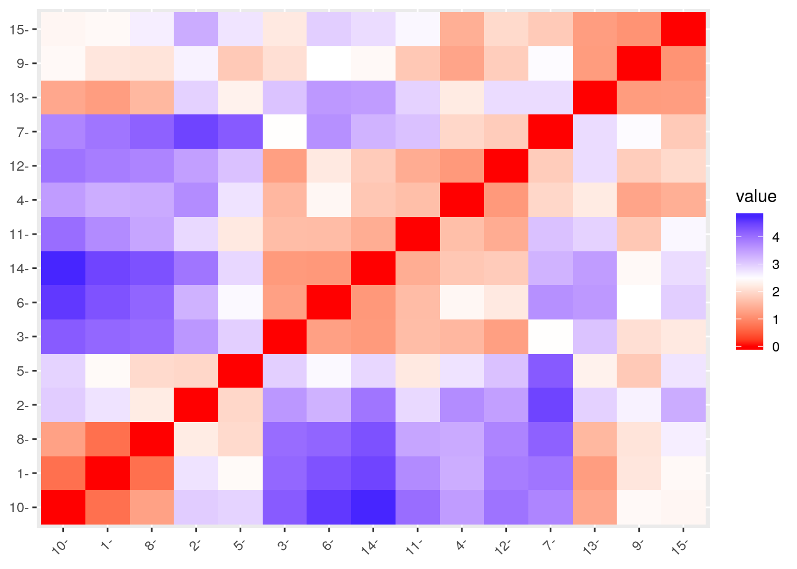
Partitioning Clustering
- K-means clustering
- K-medoids clustering (PAM)
- CLARA algorithm (Clustering Large Applications)
How it works
- Classify observations in a data-set
- Based on similarity
- Requires the analyst to specify the number of clusters.
K-means clustering
data("USArrests")
df <- USArrests #%>%sample_n(15)
df_scaled <- df%>%mutate_all(.funs =funs(scale(.) %>% as.vector) )
row.names(df_scaled) <- row.names(df)
df_scaled## Murder Assault UrbanPop Rape
## Alabama 1.24256408 0.78283935 -0.52090661 -0.003416473
## Alaska 0.50786248 1.10682252 -1.21176419 2.484202941
## Arizona 0.07163341 1.47880321 0.99898006 1.042878388
## Arkansas 0.23234938 0.23086801 -1.07359268 -0.184916602
## California 0.27826823 1.26281442 1.75892340 2.067820292
## Colorado 0.02571456 0.39885929 0.86080854 1.864967207
## Connecticut -1.03041900 -0.72908214 0.79172279 -1.081740768
## Delaware -0.43347395 0.80683810 0.44629400 -0.579946294
## Florida 1.74767144 1.97077766 0.99898006 1.138966691
## Georgia 2.20685994 0.48285493 -0.38273510 0.487701523
## Hawaii -0.57123050 -1.49704226 1.20623733 -0.110181255
## Idaho -1.19113497 -0.60908837 -0.79724965 -0.750769945
## Illinois 0.59970018 0.93883125 1.20623733 0.295524916
## Indiana -0.13500142 -0.69308401 -0.03730631 -0.024769429
## Iowa -1.28297267 -1.37704849 -0.58999237 -1.060387812
## Kansas -0.41051452 -0.66908525 0.03177945 -0.345063775
## Kentucky 0.43898421 -0.74108152 -0.93542116 -0.526563903
## Louisiana 1.74767144 0.93883125 0.03177945 0.103348309
## Maine -1.30593210 -1.05306531 -1.00450692 -1.434064548
## Maryland 0.80633501 1.55079947 0.10086521 0.701231086
## Massachusetts -0.77786532 -0.26110644 1.34440885 -0.526563903
## Michigan 0.99001041 1.01082751 0.58446551 1.480613993
## Minnesota -1.16817555 -1.18505846 0.03177945 -0.676034598
## Mississippi 1.90838741 1.05882502 -1.48810723 -0.441152078
## Missouri 0.27826823 0.08687549 0.30812248 0.743936999
## Montana -0.41051452 -0.74108152 -0.86633540 -0.515887425
## Nebraska -0.80082475 -0.82507715 -0.24456358 -0.505210947
## Nevada 1.01296983 0.97482938 1.06806582 2.644350114
## New Hampshire -1.30593210 -1.36504911 -0.65907813 -1.252564419
## New Jersey -0.08908257 -0.14111267 1.62075188 -0.259651949
## New Mexico 0.82929443 1.37080881 0.30812248 1.160319648
## New York 0.76041616 0.99882813 1.41349461 0.519730957
## North Carolina 1.19664523 1.99477641 -1.41902147 -0.547916860
## North Dakota -1.60440462 -1.50904164 -1.48810723 -1.487446939
## Ohio -0.11204199 -0.60908837 0.65355127 0.017936483
## Oklahoma -0.27275797 -0.23710769 0.16995096 -0.131534211
## Oregon -0.66306820 -0.14111267 0.10086521 0.861378259
## Pennsylvania -0.34163624 -0.77707965 0.44629400 -0.676034598
## Rhode Island -1.00745957 0.03887798 1.48258036 -1.380682157
## South Carolina 1.51807718 1.29881255 -1.21176419 0.135377743
## South Dakota -0.91562187 -1.01706718 -1.41902147 -0.900240639
## Tennessee 1.24256408 0.20686926 -0.45182086 0.605142783
## Texas 1.12776696 0.36286116 0.99898006 0.455672088
## Utah -1.05337842 -0.60908837 0.99898006 0.178083656
## Vermont -1.28297267 -1.47304350 -2.31713632 -1.071064290
## Virginia 0.16347111 -0.17711080 -0.17547783 -0.056798864
## Washington -0.86970302 -0.30910395 0.51537975 0.530407436
## West Virginia -0.47939280 -1.07706407 -1.83353601 -1.273917376
## Wisconsin -1.19113497 -1.41304662 0.03177945 -1.113770203
## Wyoming -0.22683912 -0.11711392 -0.38273510 -0.601299251library(factoextra)
fviz_nbclust(df_scaled,kmeans,method = "wss")+
geom_vline(xintercept = 4,linetype=2)
set.seed(123)
km_res <- kmeans(df_scaled,4,nstart = 25)
print(km_res)## K-means clustering with 4 clusters of sizes 13, 16, 13, 8
##
## Cluster means:
## Murder Assault UrbanPop Rape
## 1 -0.9615407 -1.1066010 -0.9301069 -0.96676331
## 2 -0.4894375 -0.3826001 0.5758298 -0.26165379
## 3 0.6950701 1.0394414 0.7226370 1.27693964
## 4 1.4118898 0.8743346 -0.8145211 0.01927104
##
## Clustering vector:
## Alabama Alaska Arizona Arkansas California
## 4 3 3 4 3
## Colorado Connecticut Delaware Florida Georgia
## 3 2 2 3 4
## Hawaii Idaho Illinois Indiana Iowa
## 2 1 3 2 1
## Kansas Kentucky Louisiana Maine Maryland
## 2 1 4 1 3
## Massachusetts Michigan Minnesota Mississippi Missouri
## 2 3 1 4 3
## Montana Nebraska Nevada New Hampshire New Jersey
## 1 1 3 1 2
## New Mexico New York North Carolina North Dakota Ohio
## 3 3 4 1 2
## Oklahoma Oregon Pennsylvania Rhode Island South Carolina
## 2 2 2 2 4
## South Dakota Tennessee Texas Utah Vermont
## 1 4 3 2 1
## Virginia Washington West Virginia Wisconsin Wyoming
## 2 2 1 1 2
##
## Within cluster sum of squares by cluster:
## [1] 11.952463 16.212213 19.922437 8.316061
## (between_SS / total_SS = 71.2 %)
##
## Available components:
##
## [1] "cluster" "centers" "totss" "withinss"
## [5] "tot.withinss" "betweenss" "size" "iter"
## [9] "ifault"Compute the mean for each varabiles by clusters
Build a combined dataset of the USArrests and the Clusters
the_us_arrests <- USArrests
the_us_arrests$state <- rownames(USArrests)
the_clusters <- data.frame(state = names(km_res$cluster),cluster=km_res$cluster)
the_us_arrests <- left_join(the_us_arrests,the_clusters)
the_us_arrests## Murder Assault UrbanPop Rape state cluster
## 1 13.2 236 58 21.2 Alabama 4
## 2 10.0 263 48 44.5 Alaska 3
## 3 8.1 294 80 31.0 Arizona 3
## 4 8.8 190 50 19.5 Arkansas 4
## 5 9.0 276 91 40.6 California 3
## 6 7.9 204 78 38.7 Colorado 3
## 7 3.3 110 77 11.1 Connecticut 2
## 8 5.9 238 72 15.8 Delaware 2
## 9 15.4 335 80 31.9 Florida 3
## 10 17.4 211 60 25.8 Georgia 4
## 11 5.3 46 83 20.2 Hawaii 2
## 12 2.6 120 54 14.2 Idaho 1
## 13 10.4 249 83 24.0 Illinois 3
## 14 7.2 113 65 21.0 Indiana 2
## 15 2.2 56 57 11.3 Iowa 1
## 16 6.0 115 66 18.0 Kansas 2
## 17 9.7 109 52 16.3 Kentucky 1
## 18 15.4 249 66 22.2 Louisiana 4
## 19 2.1 83 51 7.8 Maine 1
## 20 11.3 300 67 27.8 Maryland 3
## 21 4.4 149 85 16.3 Massachusetts 2
## 22 12.1 255 74 35.1 Michigan 3
## 23 2.7 72 66 14.9 Minnesota 1
## 24 16.1 259 44 17.1 Mississippi 4
## 25 9.0 178 70 28.2 Missouri 3
## 26 6.0 109 53 16.4 Montana 1
## 27 4.3 102 62 16.5 Nebraska 1
## 28 12.2 252 81 46.0 Nevada 3
## 29 2.1 57 56 9.5 New Hampshire 1
## 30 7.4 159 89 18.8 New Jersey 2
## 31 11.4 285 70 32.1 New Mexico 3
## 32 11.1 254 86 26.1 New York 3
## 33 13.0 337 45 16.1 North Carolina 4
## 34 0.8 45 44 7.3 North Dakota 1
## 35 7.3 120 75 21.4 Ohio 2
## 36 6.6 151 68 20.0 Oklahoma 2
## 37 4.9 159 67 29.3 Oregon 2
## 38 6.3 106 72 14.9 Pennsylvania 2
## 39 3.4 174 87 8.3 Rhode Island 2
## 40 14.4 279 48 22.5 South Carolina 4
## 41 3.8 86 45 12.8 South Dakota 1
## 42 13.2 188 59 26.9 Tennessee 4
## 43 12.7 201 80 25.5 Texas 3
## 44 3.2 120 80 22.9 Utah 2
## 45 2.2 48 32 11.2 Vermont 1
## 46 8.5 156 63 20.7 Virginia 2
## 47 4.0 145 73 26.2 Washington 2
## 48 5.7 81 39 9.3 West Virginia 1
## 49 2.6 53 66 10.8 Wisconsin 1
## 50 6.8 161 60 15.6 Wyoming 2Summarize the data set to determine the mean
the_us_arrests%>%group_by(cluster)%>%summarise_if(.predicate = is.numeric,.funs = mean)## # A tibble: 4 x 5
## cluster Murder Assault UrbanPop Rape
## <int> <dbl> <dbl> <dbl> <dbl>
## 1 1 3.6 78.5 52.1 12.2
## 2 2 5.66 139. 73.9 18.8
## 3 3 10.8 257. 76 33.2
## 4 4 13.9 244. 53.8 21.4Visualizing k-means clusters
fviz_cluster(km_res,data = df,
palette=c("#C1FFC1", "#FFB6C1", "#98F5FF", "#FFD700"),
ellipse.type = "euclid",star.plot=TRUE,repel = TRUE,ggtheme = theme_minimal())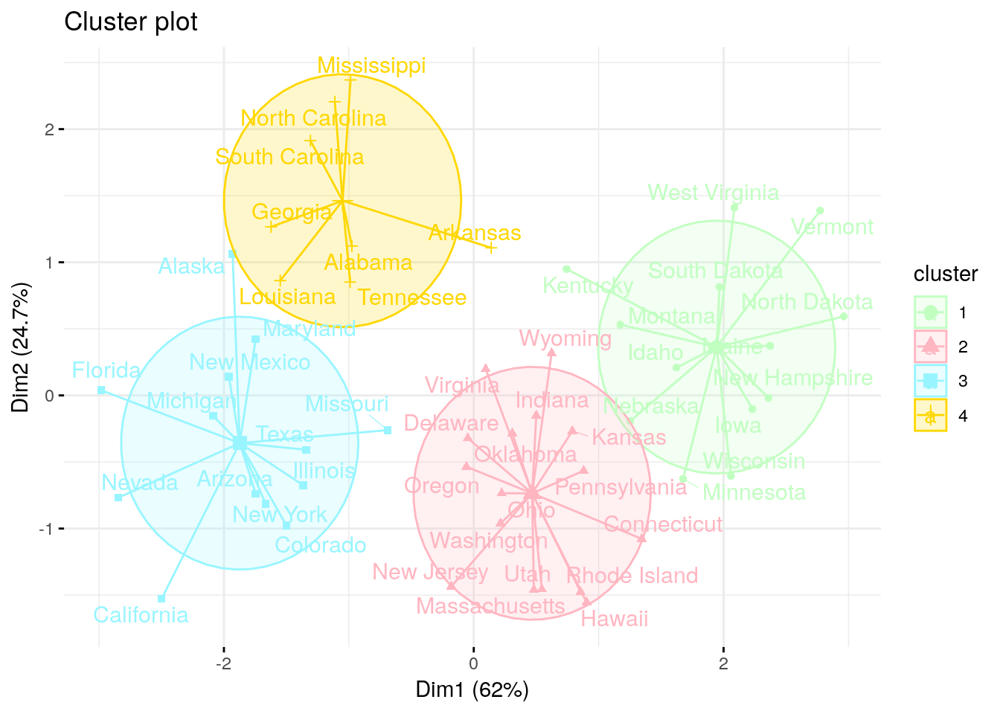
K-medoids
K-medoids utilize the median to remove the impact of outliers on the cluster.
- Cluster medoids
- Less reactive to noise and outliers
- silhouette algorithm determines cluster counts (k)
PAM (Partioning Arround Medoids)
Computing PAM in R
data("USArrests")
df <- USArrests #%>%sample_n(15)
df_scaled <- df%>%mutate_all(.funs =funs(scale(.) %>% as.vector) )
row.names(df_scaled) <- row.names(df)
df_scaled## Murder Assault UrbanPop Rape
## Alabama 1.24256408 0.78283935 -0.52090661 -0.003416473
## Alaska 0.50786248 1.10682252 -1.21176419 2.484202941
## Arizona 0.07163341 1.47880321 0.99898006 1.042878388
## Arkansas 0.23234938 0.23086801 -1.07359268 -0.184916602
## California 0.27826823 1.26281442 1.75892340 2.067820292
## Colorado 0.02571456 0.39885929 0.86080854 1.864967207
## Connecticut -1.03041900 -0.72908214 0.79172279 -1.081740768
## Delaware -0.43347395 0.80683810 0.44629400 -0.579946294
## Florida 1.74767144 1.97077766 0.99898006 1.138966691
## Georgia 2.20685994 0.48285493 -0.38273510 0.487701523
## Hawaii -0.57123050 -1.49704226 1.20623733 -0.110181255
## Idaho -1.19113497 -0.60908837 -0.79724965 -0.750769945
## Illinois 0.59970018 0.93883125 1.20623733 0.295524916
## Indiana -0.13500142 -0.69308401 -0.03730631 -0.024769429
## Iowa -1.28297267 -1.37704849 -0.58999237 -1.060387812
## Kansas -0.41051452 -0.66908525 0.03177945 -0.345063775
## Kentucky 0.43898421 -0.74108152 -0.93542116 -0.526563903
## Louisiana 1.74767144 0.93883125 0.03177945 0.103348309
## Maine -1.30593210 -1.05306531 -1.00450692 -1.434064548
## Maryland 0.80633501 1.55079947 0.10086521 0.701231086
## Massachusetts -0.77786532 -0.26110644 1.34440885 -0.526563903
## Michigan 0.99001041 1.01082751 0.58446551 1.480613993
## Minnesota -1.16817555 -1.18505846 0.03177945 -0.676034598
## Mississippi 1.90838741 1.05882502 -1.48810723 -0.441152078
## Missouri 0.27826823 0.08687549 0.30812248 0.743936999
## Montana -0.41051452 -0.74108152 -0.86633540 -0.515887425
## Nebraska -0.80082475 -0.82507715 -0.24456358 -0.505210947
## Nevada 1.01296983 0.97482938 1.06806582 2.644350114
## New Hampshire -1.30593210 -1.36504911 -0.65907813 -1.252564419
## New Jersey -0.08908257 -0.14111267 1.62075188 -0.259651949
## New Mexico 0.82929443 1.37080881 0.30812248 1.160319648
## New York 0.76041616 0.99882813 1.41349461 0.519730957
## North Carolina 1.19664523 1.99477641 -1.41902147 -0.547916860
## North Dakota -1.60440462 -1.50904164 -1.48810723 -1.487446939
## Ohio -0.11204199 -0.60908837 0.65355127 0.017936483
## Oklahoma -0.27275797 -0.23710769 0.16995096 -0.131534211
## Oregon -0.66306820 -0.14111267 0.10086521 0.861378259
## Pennsylvania -0.34163624 -0.77707965 0.44629400 -0.676034598
## Rhode Island -1.00745957 0.03887798 1.48258036 -1.380682157
## South Carolina 1.51807718 1.29881255 -1.21176419 0.135377743
## South Dakota -0.91562187 -1.01706718 -1.41902147 -0.900240639
## Tennessee 1.24256408 0.20686926 -0.45182086 0.605142783
## Texas 1.12776696 0.36286116 0.99898006 0.455672088
## Utah -1.05337842 -0.60908837 0.99898006 0.178083656
## Vermont -1.28297267 -1.47304350 -2.31713632 -1.071064290
## Virginia 0.16347111 -0.17711080 -0.17547783 -0.056798864
## Washington -0.86970302 -0.30910395 0.51537975 0.530407436
## West Virginia -0.47939280 -1.07706407 -1.83353601 -1.273917376
## Wisconsin -1.19113497 -1.41304662 0.03177945 -1.113770203
## Wyoming -0.22683912 -0.11711392 -0.38273510 -0.601299251There are 2 packages that support PAM. * cluster * fpc
install.packages("cluster","fpc")library(cluster)
library(factoextra)
fviz_nbclust(df_scaled, pam, method = "silhouette") +
theme_classic()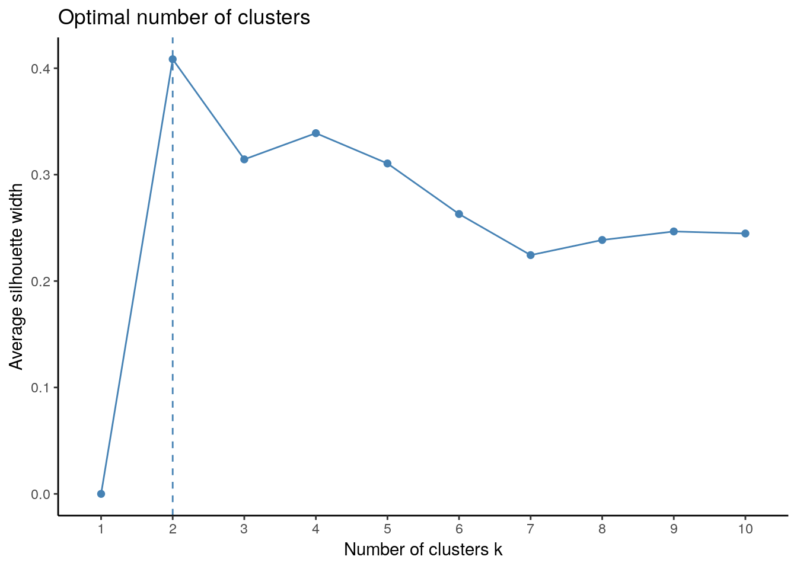
pam_res <- pam(df_scaled, 2)
pam_res## Medoids:
## ID Murder Assault UrbanPop Rape
## New Mexico 31 0.8292944 1.3708088 0.3081225 1.1603196
## Nebraska 27 -0.8008247 -0.8250772 -0.2445636 -0.5052109
## Clustering vector:
## Alabama Alaska Arizona Arkansas California
## 1 1 1 2 1
## Colorado Connecticut Delaware Florida Georgia
## 1 2 2 1 1
## Hawaii Idaho Illinois Indiana Iowa
## 2 2 1 2 2
## Kansas Kentucky Louisiana Maine Maryland
## 2 2 1 2 1
## Massachusetts Michigan Minnesota Mississippi Missouri
## 2 1 2 1 1
## Montana Nebraska Nevada New Hampshire New Jersey
## 2 2 1 2 2
## New Mexico New York North Carolina North Dakota Ohio
## 1 1 1 2 2
## Oklahoma Oregon Pennsylvania Rhode Island South Carolina
## 2 2 2 2 1
## South Dakota Tennessee Texas Utah Vermont
## 2 1 1 2 2
## Virginia Washington West Virginia Wisconsin Wyoming
## 2 2 2 2 2
## Objective function:
## build swap
## 1.441358 1.368969
##
## Available components:
## [1] "medoids" "id.med" "clustering" "objective" "isolation"
## [6] "clusinfo" "silinfo" "diss" "call" "data"the_us_arrests <- USArrests
the_us_arrests$state <- rownames(USArrests)
the_clusters <- data.frame(state = names(pam_res$cluster),cluster=pam_res$cluster)
the_us_arrests <- left_join(the_us_arrests,the_clusters)
the_us_arrests## Murder Assault UrbanPop Rape state cluster
## 1 13.2 236 58 21.2 Alabama 1
## 2 10.0 263 48 44.5 Alaska 1
## 3 8.1 294 80 31.0 Arizona 1
## 4 8.8 190 50 19.5 Arkansas 2
## 5 9.0 276 91 40.6 California 1
## 6 7.9 204 78 38.7 Colorado 1
## 7 3.3 110 77 11.1 Connecticut 2
## 8 5.9 238 72 15.8 Delaware 2
## 9 15.4 335 80 31.9 Florida 1
## 10 17.4 211 60 25.8 Georgia 1
## 11 5.3 46 83 20.2 Hawaii 2
## 12 2.6 120 54 14.2 Idaho 2
## 13 10.4 249 83 24.0 Illinois 1
## 14 7.2 113 65 21.0 Indiana 2
## 15 2.2 56 57 11.3 Iowa 2
## 16 6.0 115 66 18.0 Kansas 2
## 17 9.7 109 52 16.3 Kentucky 2
## 18 15.4 249 66 22.2 Louisiana 1
## 19 2.1 83 51 7.8 Maine 2
## 20 11.3 300 67 27.8 Maryland 1
## 21 4.4 149 85 16.3 Massachusetts 2
## 22 12.1 255 74 35.1 Michigan 1
## 23 2.7 72 66 14.9 Minnesota 2
## 24 16.1 259 44 17.1 Mississippi 1
## 25 9.0 178 70 28.2 Missouri 1
## 26 6.0 109 53 16.4 Montana 2
## 27 4.3 102 62 16.5 Nebraska 2
## 28 12.2 252 81 46.0 Nevada 1
## 29 2.1 57 56 9.5 New Hampshire 2
## 30 7.4 159 89 18.8 New Jersey 2
## 31 11.4 285 70 32.1 New Mexico 1
## 32 11.1 254 86 26.1 New York 1
## 33 13.0 337 45 16.1 North Carolina 1
## 34 0.8 45 44 7.3 North Dakota 2
## 35 7.3 120 75 21.4 Ohio 2
## 36 6.6 151 68 20.0 Oklahoma 2
## 37 4.9 159 67 29.3 Oregon 2
## 38 6.3 106 72 14.9 Pennsylvania 2
## 39 3.4 174 87 8.3 Rhode Island 2
## 40 14.4 279 48 22.5 South Carolina 1
## 41 3.8 86 45 12.8 South Dakota 2
## 42 13.2 188 59 26.9 Tennessee 1
## 43 12.7 201 80 25.5 Texas 1
## 44 3.2 120 80 22.9 Utah 2
## 45 2.2 48 32 11.2 Vermont 2
## 46 8.5 156 63 20.7 Virginia 2
## 47 4.0 145 73 26.2 Washington 2
## 48 5.7 81 39 9.3 West Virginia 2
## 49 2.6 53 66 10.8 Wisconsin 2
## 50 6.8 161 60 15.6 Wyoming 2pam_res$medoids## Murder Assault UrbanPop Rape
## New Mexico 0.8292944 1.3708088 0.3081225 1.1603196
## Nebraska -0.8008247 -0.8250772 -0.2445636 -0.5052109pam_res$clustering## Alabama Alaska Arizona Arkansas California
## 1 1 1 2 1
## Colorado Connecticut Delaware Florida Georgia
## 1 2 2 1 1
## Hawaii Idaho Illinois Indiana Iowa
## 2 2 1 2 2
## Kansas Kentucky Louisiana Maine Maryland
## 2 2 1 2 1
## Massachusetts Michigan Minnesota Mississippi Missouri
## 2 1 2 1 1
## Montana Nebraska Nevada New Hampshire New Jersey
## 2 2 1 2 2
## New Mexico New York North Carolina North Dakota Ohio
## 1 1 1 2 2
## Oklahoma Oregon Pennsylvania Rhode Island South Carolina
## 2 2 2 2 1
## South Dakota Tennessee Texas Utah Vermont
## 2 1 1 2 2
## Virginia Washington West Virginia Wisconsin Wyoming
## 2 2 2 2 2fviz_cluster(pam_res,palete = c("#00CDCD", "#FFA07A"),ellipse.type = "t",
repel = TRUE, ggtheme = theme_classic())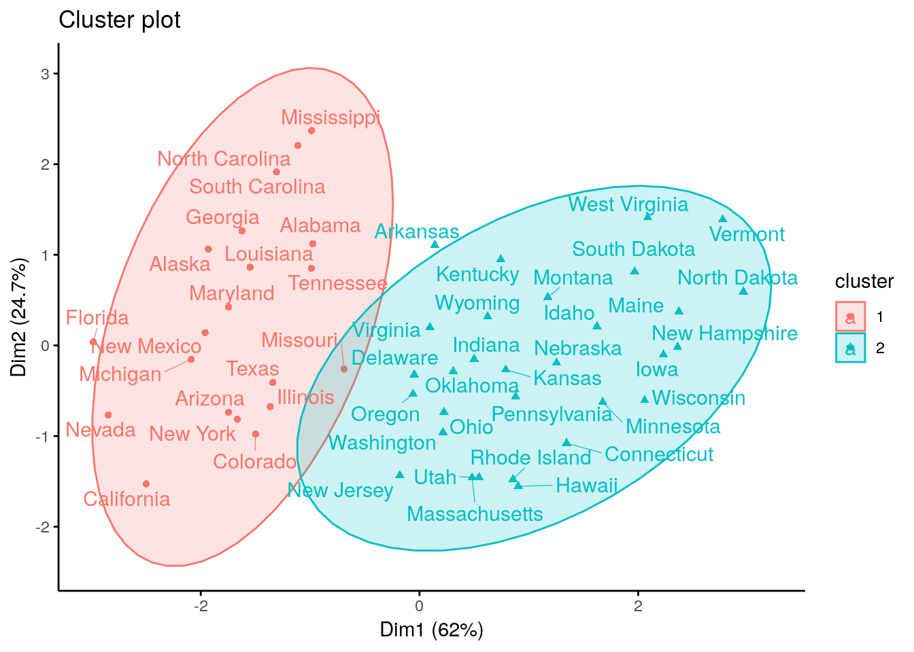
library(fpc)
pamk_res <- fpc::pamk(data = df_scaled)
pamk_res## $pamobject
## Medoids:
## ID Murder Assault UrbanPop Rape
## New Mexico 31 0.8292944 1.3708088 0.3081225 1.1603196
## Nebraska 27 -0.8008247 -0.8250772 -0.2445636 -0.5052109
## Clustering vector:
## Alabama Alaska Arizona Arkansas California
## 1 1 1 2 1
## Colorado Connecticut Delaware Florida Georgia
## 1 2 2 1 1
## Hawaii Idaho Illinois Indiana Iowa
## 2 2 1 2 2
## Kansas Kentucky Louisiana Maine Maryland
## 2 2 1 2 1
## Massachusetts Michigan Minnesota Mississippi Missouri
## 2 1 2 1 1
## Montana Nebraska Nevada New Hampshire New Jersey
## 2 2 1 2 2
## New Mexico New York North Carolina North Dakota Ohio
## 1 1 1 2 2
## Oklahoma Oregon Pennsylvania Rhode Island South Carolina
## 2 2 2 2 1
## South Dakota Tennessee Texas Utah Vermont
## 2 1 1 2 2
## Virginia Washington West Virginia Wisconsin Wyoming
## 2 2 2 2 2
## Objective function:
## build swap
## 1.441358 1.368969
##
## Available components:
## [1] "medoids" "id.med" "clustering" "objective" "isolation"
## [6] "clusinfo" "silinfo" "diss" "call" "data"
##
## $nc
## [1] 2
##
## $crit
## [1] 0.0000000 0.4084890 0.3143656 0.3389904 0.3105170 0.2629987 0.2243815
## [8] 0.2386072 0.2466113 0.2447023the_us_arrests <- USArrests
the_us_arrests$state <- rownames(USArrests)
the_clusters <- data.frame(state = names(pamk_res$pamobject$clustering),cluster=pamk_res$pamobject$clustering)
the_us_arrests <- left_join(the_us_arrests,the_clusters)
the_us_arrests## Murder Assault UrbanPop Rape state cluster
## 1 13.2 236 58 21.2 Alabama 1
## 2 10.0 263 48 44.5 Alaska 1
## 3 8.1 294 80 31.0 Arizona 1
## 4 8.8 190 50 19.5 Arkansas 2
## 5 9.0 276 91 40.6 California 1
## 6 7.9 204 78 38.7 Colorado 1
## 7 3.3 110 77 11.1 Connecticut 2
## 8 5.9 238 72 15.8 Delaware 2
## 9 15.4 335 80 31.9 Florida 1
## 10 17.4 211 60 25.8 Georgia 1
## 11 5.3 46 83 20.2 Hawaii 2
## 12 2.6 120 54 14.2 Idaho 2
## 13 10.4 249 83 24.0 Illinois 1
## 14 7.2 113 65 21.0 Indiana 2
## 15 2.2 56 57 11.3 Iowa 2
## 16 6.0 115 66 18.0 Kansas 2
## 17 9.7 109 52 16.3 Kentucky 2
## 18 15.4 249 66 22.2 Louisiana 1
## 19 2.1 83 51 7.8 Maine 2
## 20 11.3 300 67 27.8 Maryland 1
## 21 4.4 149 85 16.3 Massachusetts 2
## 22 12.1 255 74 35.1 Michigan 1
## 23 2.7 72 66 14.9 Minnesota 2
## 24 16.1 259 44 17.1 Mississippi 1
## 25 9.0 178 70 28.2 Missouri 1
## 26 6.0 109 53 16.4 Montana 2
## 27 4.3 102 62 16.5 Nebraska 2
## 28 12.2 252 81 46.0 Nevada 1
## 29 2.1 57 56 9.5 New Hampshire 2
## 30 7.4 159 89 18.8 New Jersey 2
## 31 11.4 285 70 32.1 New Mexico 1
## 32 11.1 254 86 26.1 New York 1
## 33 13.0 337 45 16.1 North Carolina 1
## 34 0.8 45 44 7.3 North Dakota 2
## 35 7.3 120 75 21.4 Ohio 2
## 36 6.6 151 68 20.0 Oklahoma 2
## 37 4.9 159 67 29.3 Oregon 2
## 38 6.3 106 72 14.9 Pennsylvania 2
## 39 3.4 174 87 8.3 Rhode Island 2
## 40 14.4 279 48 22.5 South Carolina 1
## 41 3.8 86 45 12.8 South Dakota 2
## 42 13.2 188 59 26.9 Tennessee 1
## 43 12.7 201 80 25.5 Texas 1
## 44 3.2 120 80 22.9 Utah 2
## 45 2.2 48 32 11.2 Vermont 2
## 46 8.5 156 63 20.7 Virginia 2
## 47 4.0 145 73 26.2 Washington 2
## 48 5.7 81 39 9.3 West Virginia 2
## 49 2.6 53 66 10.8 Wisconsin 2
## 50 6.8 161 60 15.6 Wyoming 2 plot(pamk_res$pamobject)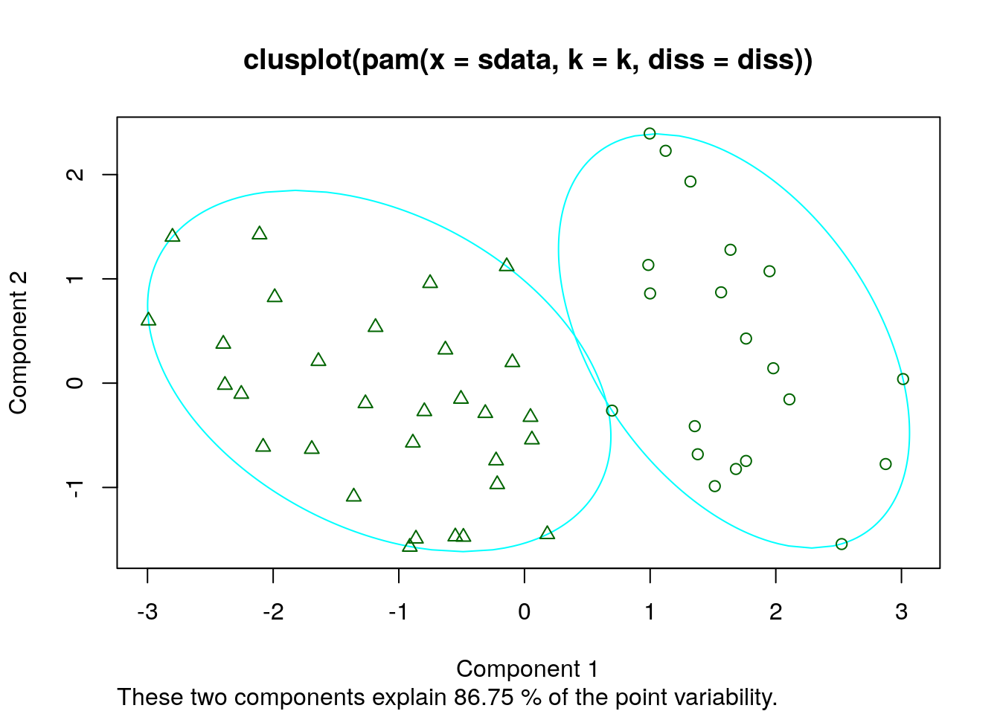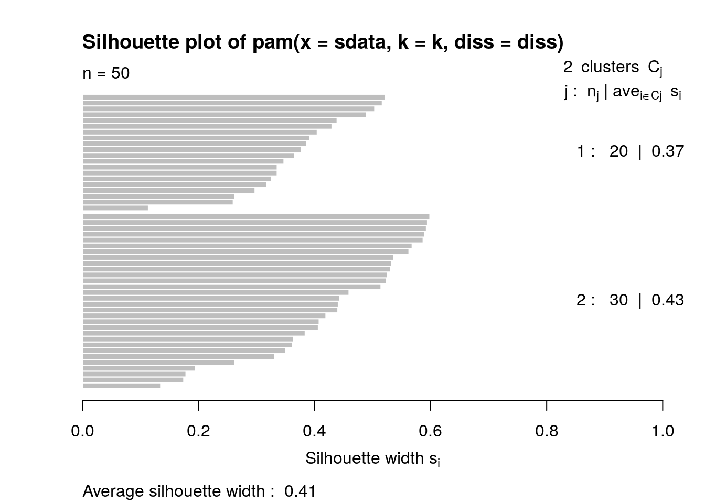
CLARA - Clustering Large Applications
CLARA extends the k-medoids algorithm to handle big data. It utilizes sampling to handle the large data sets.
CLARA concept
Minimize Sampling Bias by running multiple samples and comparing the results. Each sample medoid is measured by the avergage dissimilarity of each object.
Computing CLARA in R
set.seed(1234)
df_clust_1 <- data.frame(x=rnorm(n = 200,mean = 0,sd = 8),y=rnorm(n = 200,mean = 0,sd = 8))
df_clust_2 <- data.frame(x=rnorm(n = 300,mean = 50,sd = 8),y=rnorm(n = 300,mean = 50,sd = 8))
df <- rbind(df_clust_1,df_clust_2)
rownames(df) <- paste0("S",1:nrow(df))
head(df)## x y
## S1 -9.656526 3.881815
## S2 2.219434 5.574150
## S3 8.675529 1.484111
## S4 -18.765582 5.605868
## S5 3.432998 2.493448
## S6 4.048447 6.083699Required R packages and functions
Packages: cluster, factoextra functions: clara()
Estimating the optimal number of clusters
Utilize factoextra::fviz_nbclust() function to determine the correct number of clusters.
library(cluster)
library(factoextra)
fviz_nbclust(df,clara,method = "silhouette") +
theme_classic()Figure 1: The number of clusters created in the simulated data frame is 2. The results from the optimal cluster determination is 2.
Computing CLARA
clara_res <- clara(df, 2, samples = 50, pamLike = TRUE)
knitr::knit_print(clara_res)## Call: clara(x = df, k = 2, samples = 50, pamLike = TRUE)
## Medoids:
## x y
## S121 -1.531137 1.145057
## S455 48.357304 50.233499
## Objective function: 9.87862
## Clustering vector: Named int [1:500] 1 1 1 1 1 1 1 1 1 1 1 1 1 1 1 1 1 1 ...
## - attr(*, "names")= chr [1:500] "S1" "S2" "S3" "S4" "S5" "S6" "S7" ...
## Cluster sizes: 200 300
## Best sample:
## [1] S37 S49 S54 S63 S68 S71 S76 S80 S82 S101 S103 S108 S109 S118
## [15] S121 S128 S132 S138 S144 S162 S203 S210 S216 S231 S234 S249 S260 S261
## [29] S286 S299 S304 S305 S312 S315 S322 S350 S403 S450 S454 S455 S456 S465
## [43] S488 S497
##
## Available components:
## [1] "sample" "medoids" "i.med" "clustering" "objective"
## [6] "clusinfo" "diss" "call" "silinfo" "data"df$id <- rownames(df)
df <- df%>%select(id,x,y)
clustering <- data.frame(id= names(clara_res$clustering), cluster = clara_res$clustering)
df <- left_join(df,clustering)
head(df)## id x y cluster
## 1 S1 -9.656526 3.881815 1
## 2 S2 2.219434 5.574150 1
## 3 S3 8.675529 1.484111 1
## 4 S4 -18.765582 5.605868 1
## 5 S5 3.432998 2.493448 1
## 6 S6 4.048447 6.083699 1clara_res$medoids## x y
## S121 -1.531137 1.145057
## S455 48.357304 50.233499Visualizing CLARA clusters
fviz_cluster(clara_res,palette=c("#008B8B", "#EE3B3B"),ellipse.type = "t",geom = "point",ggtheme = theme_classic()
)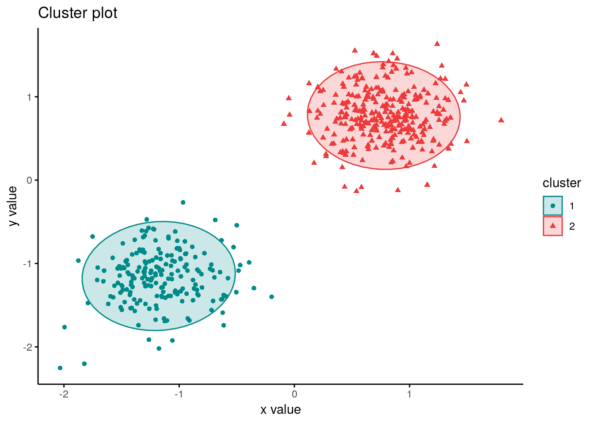
Summary
The CLARA algorithm is an extension to the PAM clustering method for large data sets. You must specify the number of clusters.
Hierachial Clustering
Also known as Hierarchial cluster analysis (HCA)
There are two types of Hierachial Clusting
- Agglomerative
- Divisive
Agglomearative is from the bottom up and Divisive is from the top down.
The term dendogram is used to describe the hierarchial structure of clustering.
Agglomerative Clustering
This clustering method initially assigns each observation as its own cluster (leaf), and then iterates to find common leafs that will match together to create the next level of cluster.
Algorithm
Data Structure and preparation
set.seed(123)
data("USArrests")
df <- USArrests
df_scaled <- df%>%mutate_all(.funs =funs(scale(.) %>% as.vector) )
row.names(df_scaled) <- row.names(df)
head(df_scaled)## Murder Assault UrbanPop Rape
## Alabama 1.24256408 0.7828393 -0.5209066 -0.003416473
## Alaska 0.50786248 1.1068225 -1.2117642 2.484202941
## Arizona 0.07163341 1.4788032 0.9989801 1.042878388
## Arkansas 0.23234938 0.2308680 -1.0735927 -0.184916602
## California 0.27826823 1.2628144 1.7589234 2.067820292
## Colorado 0.02571456 0.3988593 0.8608085 1.864967207Similarity Measures
res_dist <- df_scaled%>%dist(method = "euclidian")
head(res_dist)## [1] 2.703754 2.293520 1.289810 3.263110 2.651067 3.215297Linkage
res_hc <- hclust(d = res_dist,method = "ward.D2")Dendogram
library(factoextra)
fviz_dend(res_hc, cex = 0.8)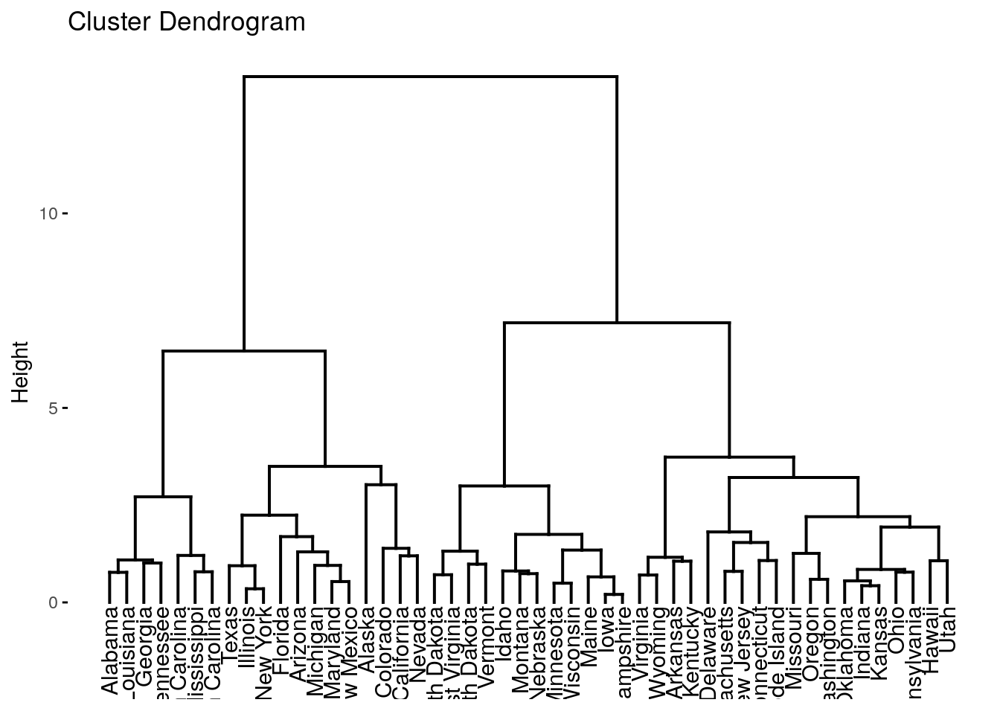
Verify the cluster tree
res_coph <- cophenetic(res_hc)
cor(res_dist,res_coph)## [1] 0.6975266res_hc2 <- hclust(res_dist, method="average")
cor(res_dist,cophenetic(res_hc2))## [1] 0.7180382Cut the dendogram into different groups
grp <- cutree(res_hc,k = 4)
grp## Alabama Alaska Arizona Arkansas California
## 1 2 2 3 2
## Colorado Connecticut Delaware Florida Georgia
## 2 3 3 2 1
## Hawaii Idaho Illinois Indiana Iowa
## 3 4 2 3 4
## Kansas Kentucky Louisiana Maine Maryland
## 3 3 1 4 2
## Massachusetts Michigan Minnesota Mississippi Missouri
## 3 2 4 1 3
## Montana Nebraska Nevada New Hampshire New Jersey
## 4 4 2 4 3
## New Mexico New York North Carolina North Dakota Ohio
## 2 2 1 4 3
## Oklahoma Oregon Pennsylvania Rhode Island South Carolina
## 3 3 3 3 1
## South Dakota Tennessee Texas Utah Vermont
## 4 1 2 3 4
## Virginia Washington West Virginia Wisconsin Wyoming
## 3 3 4 4 3table(grp)## grp
## 1 2 3 4
## 7 12 19 12str(grp)## Named int [1:50] 1 2 2 3 2 2 3 3 2 1 ...
## - attr(*, "names")= chr [1:50] "Alabama" "Alaska" "Arizona" "Arkansas" ...fviz_dend(res_hc,k = 4, cex = 0.5, k_colors = c("cornflowerblue", "aquamarine", "darkorange2", "darkkhaki"),
color_labels_by_k = TRUE,
rect = TRUE)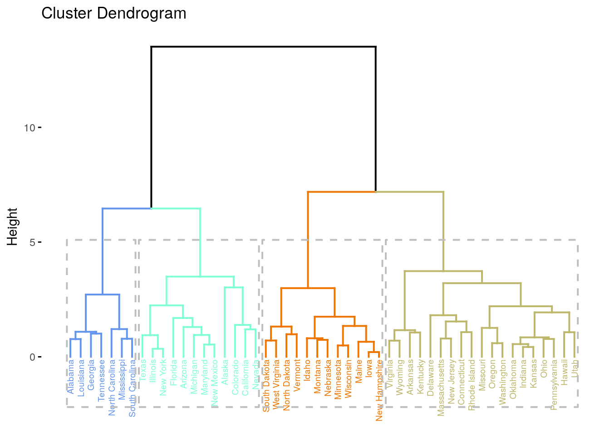
fviz_cluster(list(data=df,cluster = grp),
palette = c("cornflowerblue", "aquamarine", "darkorange2", "darkkhaki"),
ellipse.type = "convex",
repel = TRUE,
show.clust.cent = FALSE,
ggtheme = theme_minimal())
Cluster R package
Agglomerative Nesting (Hierarchial Clustering)
library(cluster)
res_agnes <- agnes(x = USArrests,
stand = TRUE,
metric = "euclidean",
method = "ward")
res_agnes## Call: agnes(x = USArrests, metric = "euclidean", stand = TRUE, method = "ward")
## Agglomerative coefficient: 0.934098
## Order of objects:
## [1] Alabama Louisiana Georgia Tennessee
## [5] Mississippi South Carolina North Carolina Alaska
## [9] California Nevada Colorado Arizona
## [13] Maryland New Mexico Michigan Florida
## [17] Illinois New York Texas Arkansas
## [21] Kentucky Virginia Wyoming Indiana
## [25] Kansas Oklahoma Ohio Pennsylvania
## [29] Missouri Oregon Washington Connecticut
## [33] Rhode Island Delaware Hawaii Utah
## [37] Massachusetts New Jersey Idaho Montana
## [41] Nebraska Iowa New Hampshire Maine
## [45] Minnesota Wisconsin North Dakota Vermont
## [49] South Dakota West Virginia
## Height (summary):
## Min. 1st Qu. Median Mean 3rd Qu. Max.
## 0.2620 0.9627 1.3332 2.2033 2.2249 16.3214
##
## Available components:
## [1] "order" "height" "ac" "merge" "diss" "call"
## [7] "method" "order.lab" "data"DIvisive ANAlysis Clustering
res_diana <- diana(x = USArrests,
stand = TRUE,
metric = "euclidean")
res_diana## Merge:
## [,1] [,2]
## [1,] -15 -29
## [2,] -13 -32
## [3,] -23 -49
## [4,] -14 -36
## [5,] -20 -31
## [6,] -16 -38
## [7,] -37 -47
## [8,] 1 -19
## [9,] 4 -35
## [10,] -41 -48
## [11,] -46 -50
## [12,] -12 -27
## [13,] -21 -30
## [14,] -24 -40
## [15,] 2 -43
## [16,] -17 -26
## [17,] -1 -42
## [18,] -10 -18
## [19,] 9 6
## [20,] -4 11
## [21,] -11 -44
## [22,] -7 -39
## [23,] 8 -34
## [24,] 10 -45
## [25,] 5 -22
## [26,] 17 18
## [27,] 14 -33
## [28,] 12 3
## [29,] -5 -28
## [30,] -3 25
## [31,] 29 -6
## [32,] 15 -25
## [33,] 30 32
## [34,] 22 13
## [35,] 23 24
## [36,] 19 7
## [37,] 20 -8
## [38,] 34 21
## [39,] 28 16
## [40,] 37 36
## [41,] 26 27
## [42,] 39 35
## [43,] 33 -9
## [44,] 43 31
## [45,] 40 38
## [46,] -2 44
## [47,] 45 42
## [48,] 41 46
## [49,] 48 47
## Order of objects:
## [1] Alabama Tennessee Georgia Louisiana
## [5] Mississippi South Carolina North Carolina Alaska
## [9] Arizona Maryland New Mexico Michigan
## [13] Illinois New York Texas Missouri
## [17] Florida California Nevada Colorado
## [21] Arkansas Virginia Wyoming Delaware
## [25] Indiana Oklahoma Ohio Kansas
## [29] Pennsylvania Oregon Washington Connecticut
## [33] Rhode Island Massachusetts New Jersey Hawaii
## [37] Utah Idaho Nebraska Minnesota
## [41] Wisconsin Kentucky Montana Iowa
## [45] New Hampshire Maine North Dakota South Dakota
## [49] West Virginia Vermont
## Height:
## [1] 1.0340801 1.3687929 1.0408349 2.8205587 0.9771986 1.3960934 5.4623592
## [8] 4.0837483 1.4720236 0.6743186 1.3385319 1.9655812 0.4336501 1.0044328
## [15] 1.8355779 2.9848751 3.0534495 1.4621581 1.7044355 7.4792599 1.2084105
## [22] 0.8788445 2.1852059 2.5927716 0.6281577 0.8500187 1.0553617 0.6765523
## [29] 2.1808837 0.7311305 3.7810250 1.2903008 1.9665793 0.9626545 2.5032675
## [36] 1.2698293 5.3463933 0.9132211 1.4571402 0.6215418 2.5227753 1.0181020
## [43] 2.9549994 0.2619577 0.7930730 1.2918266 2.1082699 0.8721679 1.3129132
## Divisive coefficient:
## [1] 0.8530481
##
## Available components:
## [1] "order" "height" "dc" "merge" "diss" "call"
## [7] "order.lab" "data"Visualize
library(factoextra)
fviz_dend(res_agnes, cex = 0.6, k = 4)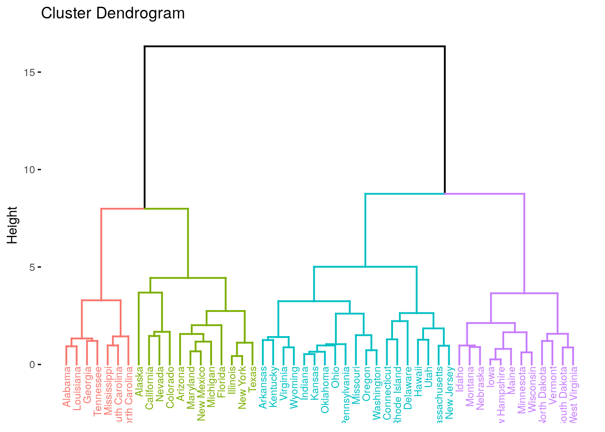
Comparing Dendograms
data("USArrests")
df <- USArrests #%>%sample_n(15)
df_scaled <- df%>%mutate_all(.funs =funs(scale(.) %>% as.vector) )
row.names(df_scaled) <- row.names(df)
df_scaled## Murder Assault UrbanPop Rape
## Alabama 1.24256408 0.78283935 -0.52090661 -0.003416473
## Alaska 0.50786248 1.10682252 -1.21176419 2.484202941
## Arizona 0.07163341 1.47880321 0.99898006 1.042878388
## Arkansas 0.23234938 0.23086801 -1.07359268 -0.184916602
## California 0.27826823 1.26281442 1.75892340 2.067820292
## Colorado 0.02571456 0.39885929 0.86080854 1.864967207
## Connecticut -1.03041900 -0.72908214 0.79172279 -1.081740768
## Delaware -0.43347395 0.80683810 0.44629400 -0.579946294
## Florida 1.74767144 1.97077766 0.99898006 1.138966691
## Georgia 2.20685994 0.48285493 -0.38273510 0.487701523
## Hawaii -0.57123050 -1.49704226 1.20623733 -0.110181255
## Idaho -1.19113497 -0.60908837 -0.79724965 -0.750769945
## Illinois 0.59970018 0.93883125 1.20623733 0.295524916
## Indiana -0.13500142 -0.69308401 -0.03730631 -0.024769429
## Iowa -1.28297267 -1.37704849 -0.58999237 -1.060387812
## Kansas -0.41051452 -0.66908525 0.03177945 -0.345063775
## Kentucky 0.43898421 -0.74108152 -0.93542116 -0.526563903
## Louisiana 1.74767144 0.93883125 0.03177945 0.103348309
## Maine -1.30593210 -1.05306531 -1.00450692 -1.434064548
## Maryland 0.80633501 1.55079947 0.10086521 0.701231086
## Massachusetts -0.77786532 -0.26110644 1.34440885 -0.526563903
## Michigan 0.99001041 1.01082751 0.58446551 1.480613993
## Minnesota -1.16817555 -1.18505846 0.03177945 -0.676034598
## Mississippi 1.90838741 1.05882502 -1.48810723 -0.441152078
## Missouri 0.27826823 0.08687549 0.30812248 0.743936999
## Montana -0.41051452 -0.74108152 -0.86633540 -0.515887425
## Nebraska -0.80082475 -0.82507715 -0.24456358 -0.505210947
## Nevada 1.01296983 0.97482938 1.06806582 2.644350114
## New Hampshire -1.30593210 -1.36504911 -0.65907813 -1.252564419
## New Jersey -0.08908257 -0.14111267 1.62075188 -0.259651949
## New Mexico 0.82929443 1.37080881 0.30812248 1.160319648
## New York 0.76041616 0.99882813 1.41349461 0.519730957
## North Carolina 1.19664523 1.99477641 -1.41902147 -0.547916860
## North Dakota -1.60440462 -1.50904164 -1.48810723 -1.487446939
## Ohio -0.11204199 -0.60908837 0.65355127 0.017936483
## Oklahoma -0.27275797 -0.23710769 0.16995096 -0.131534211
## Oregon -0.66306820 -0.14111267 0.10086521 0.861378259
## Pennsylvania -0.34163624 -0.77707965 0.44629400 -0.676034598
## Rhode Island -1.00745957 0.03887798 1.48258036 -1.380682157
## South Carolina 1.51807718 1.29881255 -1.21176419 0.135377743
## South Dakota -0.91562187 -1.01706718 -1.41902147 -0.900240639
## Tennessee 1.24256408 0.20686926 -0.45182086 0.605142783
## Texas 1.12776696 0.36286116 0.99898006 0.455672088
## Utah -1.05337842 -0.60908837 0.99898006 0.178083656
## Vermont -1.28297267 -1.47304350 -2.31713632 -1.071064290
## Virginia 0.16347111 -0.17711080 -0.17547783 -0.056798864
## Washington -0.86970302 -0.30910395 0.51537975 0.530407436
## West Virginia -0.47939280 -1.07706407 -1.83353601 -1.273917376
## Wisconsin -1.19113497 -1.41304662 0.03177945 -1.113770203
## Wyoming -0.22683912 -0.11711392 -0.38273510 -0.601299251Sample 10 rows
library(dplyr)
set.seed(123)
df_sample <- df_scaled%>%sample_n(10)
head(df_sample)## Murder Assault UrbanPop Rape
## 1 -1.28297267 -1.37704849 -0.5899924 -1.0603878
## 2 -1.00745957 0.03887798 1.4825804 -1.3806822
## 3 0.80633501 1.55079947 0.1008652 0.7012311
## 4 1.24256408 0.20686926 -0.4518209 0.6051428
## 5 -1.05337842 -0.60908837 0.9989801 0.1780837
## 6 0.07163341 1.47880321 0.9989801 1.0428784Comparing dendograms
library(dendextend)
res_dist <- dist(df_sample, method = "euclidean")
hc1 <- hclust(res_dist, method = "average")
hc2 <- hclust(res_dist, method = "ward.D2")
dend1 <- as.dendrogram(hc1)
dend2 <- as.dendrogram(hc2)
dend_list <- dendlist(dend1,dend2)tanglegram(dend1,dend2)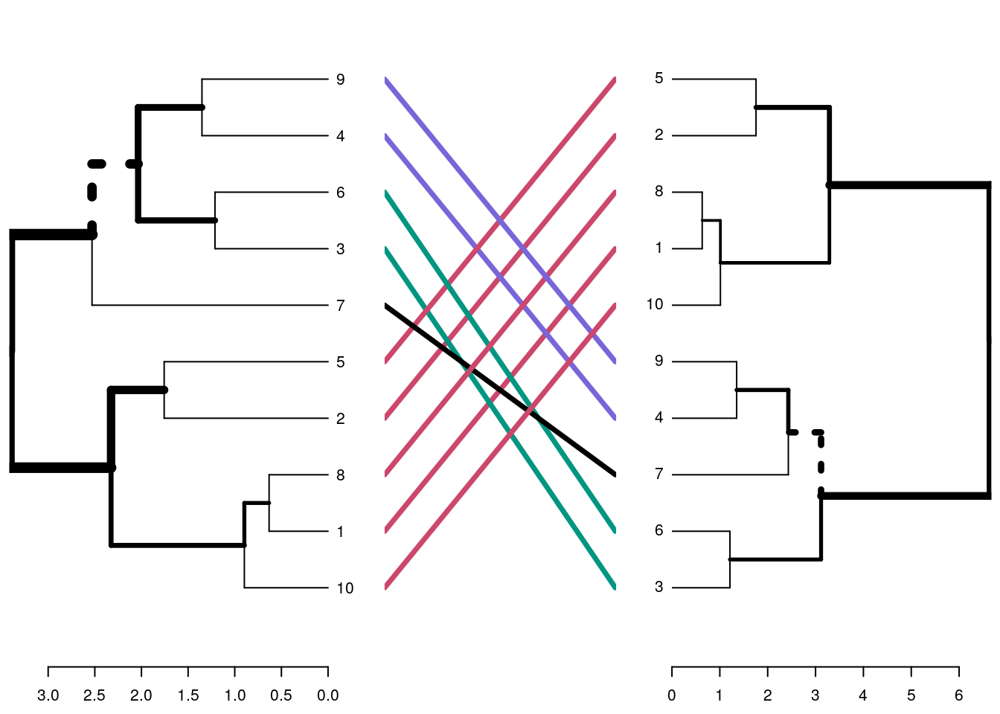
tanglegram(dend1,dend2,
highlight_distinct_edges = FALSE,
common_subtrees_color_lines = FALSE,
common_subtrees_color_branches = TRUE,
main = paste("entanglement =",round(entanglement(dend_list),2)))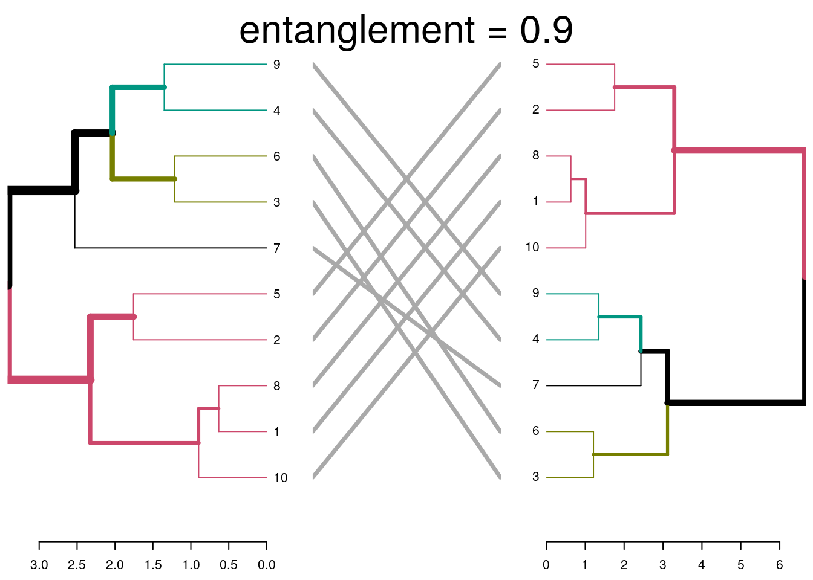
Correlation matrix between a list of dendograms
library(cluster)
cor.dendlist(dend_list,method = "cophenetic")## [,1] [,2]
## [1,] 1.0000000 0.9646883
## [2,] 0.9646883 1.0000000cor.dendlist(dend_list,method = "baker")## [,1] [,2]
## [1,] 1.0000000 0.9622885
## [2,] 0.9622885 1.0000000cor_cophenetic(dend1,dend2)## [1] 0.9646883cor_bakers_gamma(dend1,dend2)## [1] 0.9622885dend1 <- df_sample%>%dist%>% hclust("complete" ) %>% as.dendrogram
dend2 <- df_sample%>%dist%>% hclust("single" ) %>% as.dendrogram
dend3 <- df_sample%>%dist%>% hclust("average" ) %>% as.dendrogram
dend4 <- df_sample%>%dist%>% hclust("centroid" ) %>% as.dendrogram
dend_list <- dendlist("Complete"= dend1, "Single" = dend2,
"Average"=dend3, "Centroid"= dend4)
cors <-- cor.dendlist(dend_list)
round(cors, 2)## Complete Single Average Centroid
## Complete -1.00 -0.76 -0.99 -0.75
## Single -0.76 -1.00 -0.80 -0.84
## Average -0.99 -0.80 -1.00 -0.74
## Centroid -0.75 -0.84 -0.74 -1.00library(corrplot)
corrplot(cors, "pie","lower")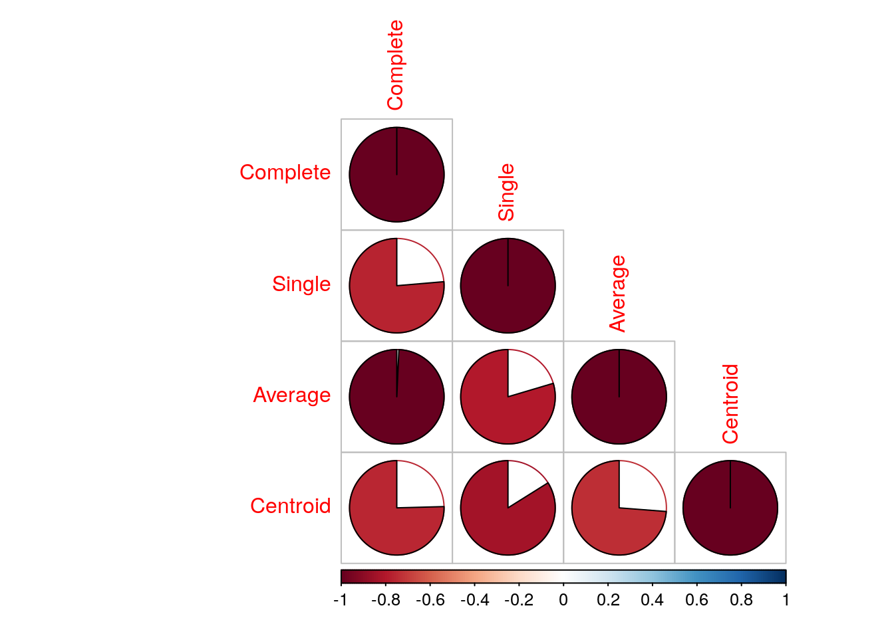
Visualizing Dendrograms
data("USArrests")
df_scale <- USArrests%>%mutate_all(.funs = funs(scale(.)))
rownames(df_scale) <- rownames(USArrests)
dd <- dist(df_scale, method = "euclidean")
hc <- dd%>%hclust(method = "ward.D2")
hc##
## Call:
## hclust(d = ., method = "ward.D2")
##
## Cluster method : ward.D2
## Distance : euclidean
## Number of objects: 50library(factoextra)
fviz_dend(hc, cex = 0.5)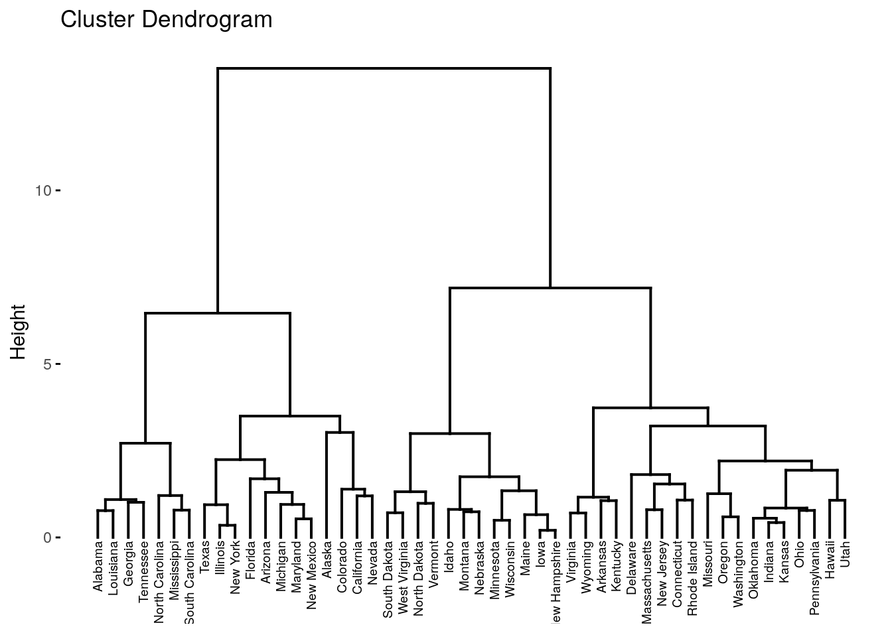
fviz_dend(hc, cex = 0.5,
main = "Dendogram - ward.D2",
xlab = "Objects",
ylab = "Distance",
sub = "")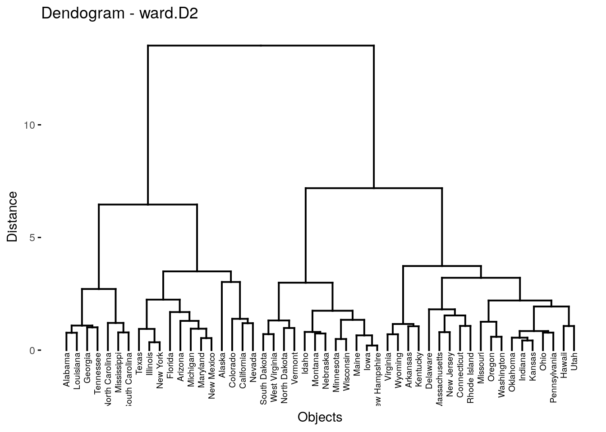
fviz_dend(hc, k=4,
cex = 0.5,
k_colors = c("#EE3B3B", "#8470FF", "#76EEC6", "#EEC900"),
main = "Dendogram - ward.D2",
xlab = "Objects",
ylab = "Distance",
sub = "",
color_labels_by_k = TRUE,
rect = TRUE,
rect_border = c("#EE3B3B", "#8470FF", "#76EEC6", "#EEC900"),
rect_fill = TRUE)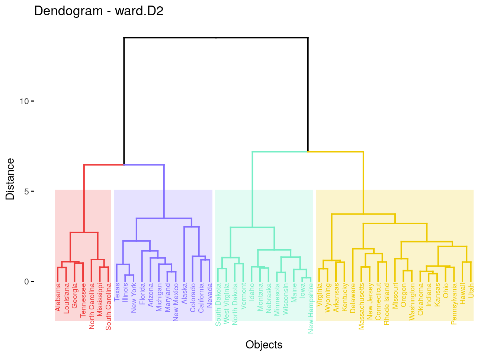
fviz_dend(hc, k=4,
cex = 0.5,
k_colors = c("#EE3B3B", "#8470FF", "#76EEC6", "#EEC900"),
main = "Dendogram - ward.D2",
xlab = "Objects",
ylab = "Distance",type = "circular",
sub = "",
color_labels_by_k = TRUE,
rect = TRUE,
rect_border = c("#EE3B3B", "#8470FF", "#76EEC6", "#EEC900"),
rect_fill = TRUE)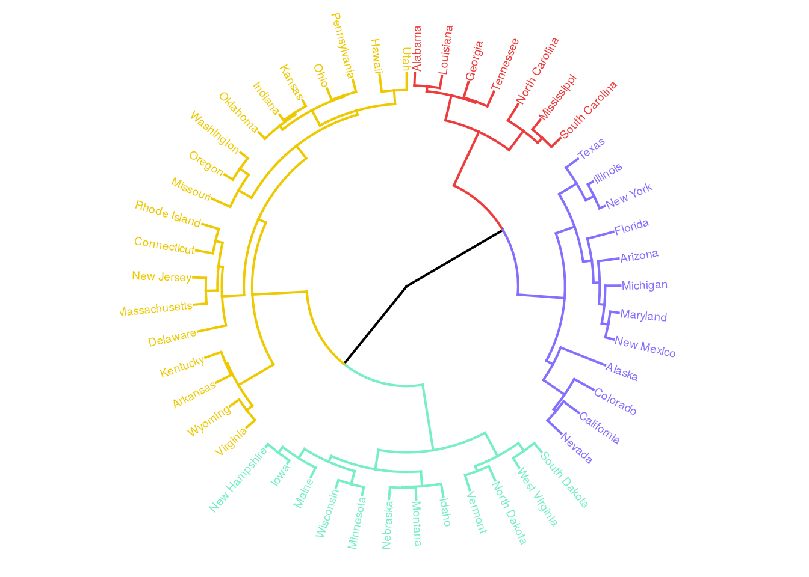
require(igraph)fviz_dend(hc, k=4,
k_colors = "jco",
main = "Dendogram - ward.D2",
xlab = "Objects",
ylab = "Distance",
sub = "",
type = "phylogenic",
phylo_layout = "layout.gem",
repel = TRUE)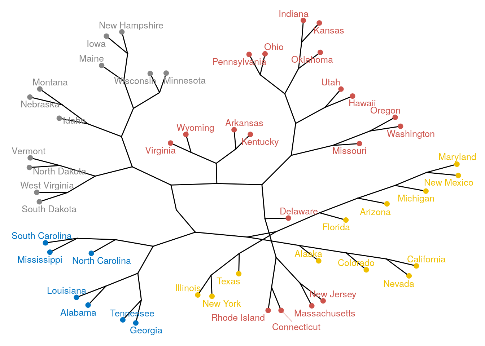
Cluster Validation
- Assessing clustering tendency
- Determing the optimal number of clusters
- Cluster validation statistics
- Choosing the best clustering algorithms
- Computing p-value for hierarchial clustering
Assessing Clustering Tendency
Required R packages
Data preparation
head(iris, 3)## Sepal.Length Sepal.Width Petal.Length Petal.Width Species
## 1 5.1 3.5 1.4 0.2 setosa
## 2 4.9 3.0 1.4 0.2 setosa
## 3 4.7 3.2 1.3 0.2 setosadf <- iris%>%select(-Species)
random_df <- apply(df,2, function(x){
runif(length(x),min(x),max(x))
})
random_df <- as.data.frame(random_df)
df <- iris_scaled <- df%>%mutate_all(.funs = funs(scale(.)))%>%as.vector
random_df <- random_df %>% mutate_all(.funs = funs(scale(.))) %>% as.vectorVisual inspection of the data
library(factoextra)
fviz_pca_ind(prcomp(df), title= "PCA - Iris data",
habillage = iris$Species, palette = "jco",
geom = "point",
ggtheme = theme_classic(),
legend = "bottom")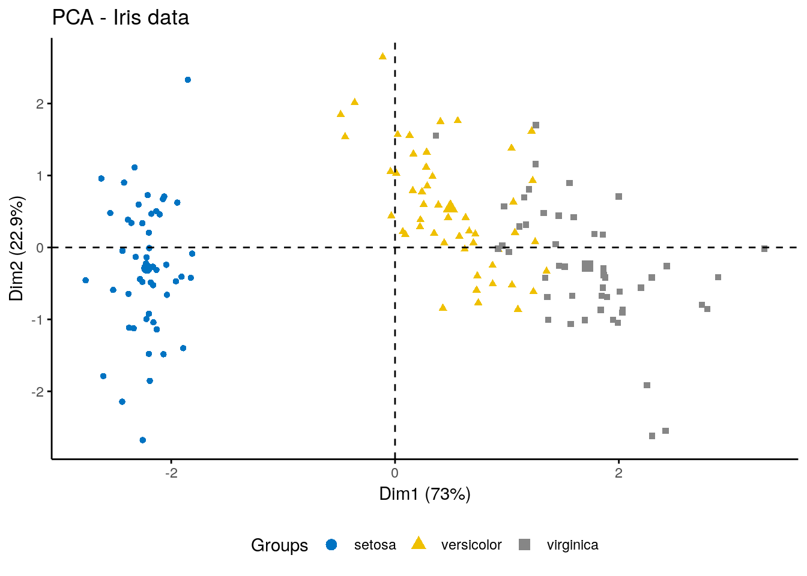
fviz_pca_ind(prcomp(random_df), title= "PCA - Random data",
habillage = iris$Species, palette = "jco",
geom = "point",
ggtheme = theme_classic(),
legend = "bottom")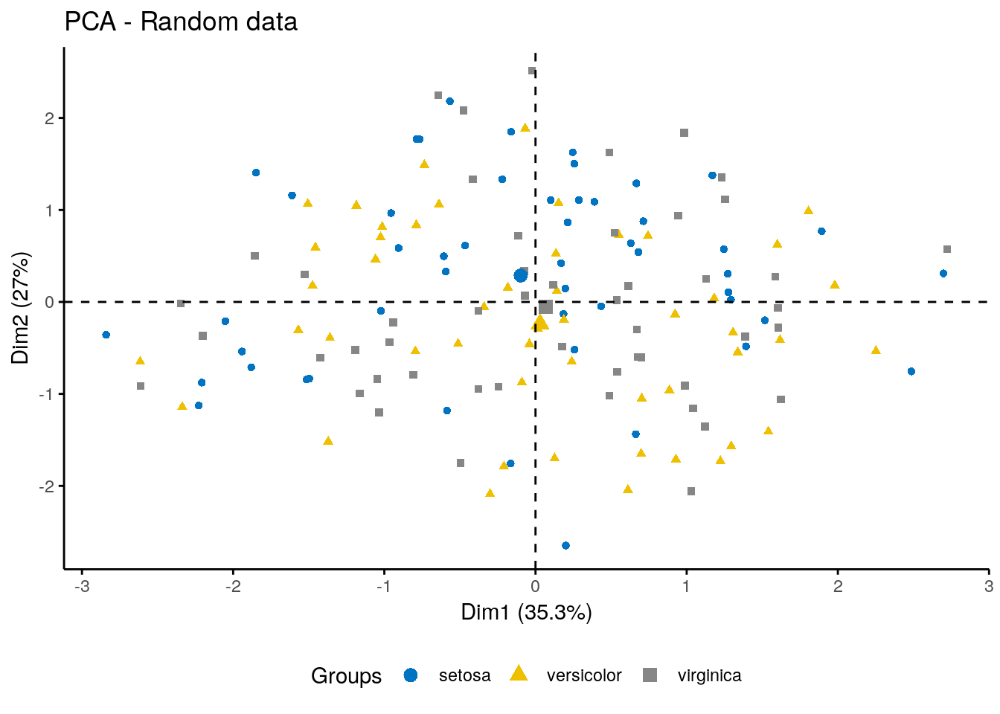
Why assessing clustering tendency?
library(factoextra)
set.seed(123)
km_res1 <- kmeans(df, 3)
fviz_cluster(list(data = df, cluster = km_res1$cluster),
ellipse.type = "norm", geom = "point", stand = FALSE,
palette = "jco", ggtheme = theme_classic())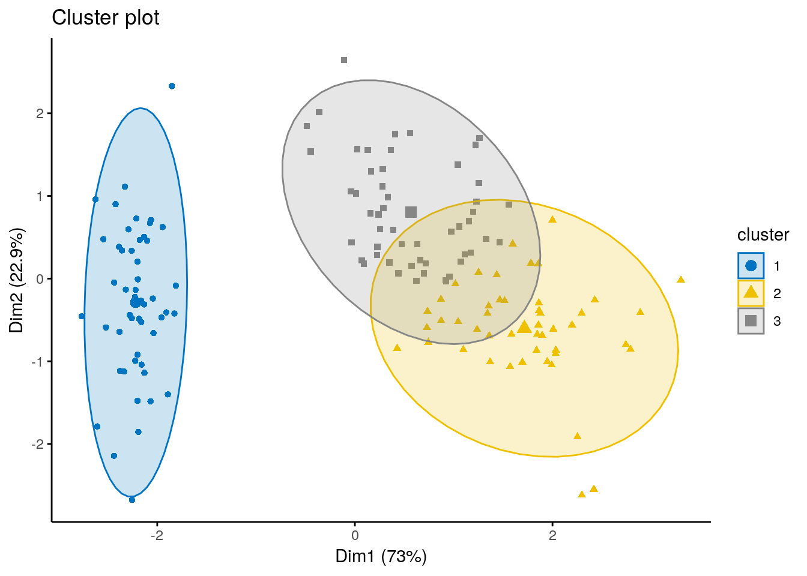
K-means on the random dataset
km_res2 <- kmeans(random_df, 3)
fviz_cluster(list(data = df, cluster = km_res2$cluster),
ellipse.type = "norm", geom = "point", stand = FALSE,
palette = "jco", ggtheme = theme_classic())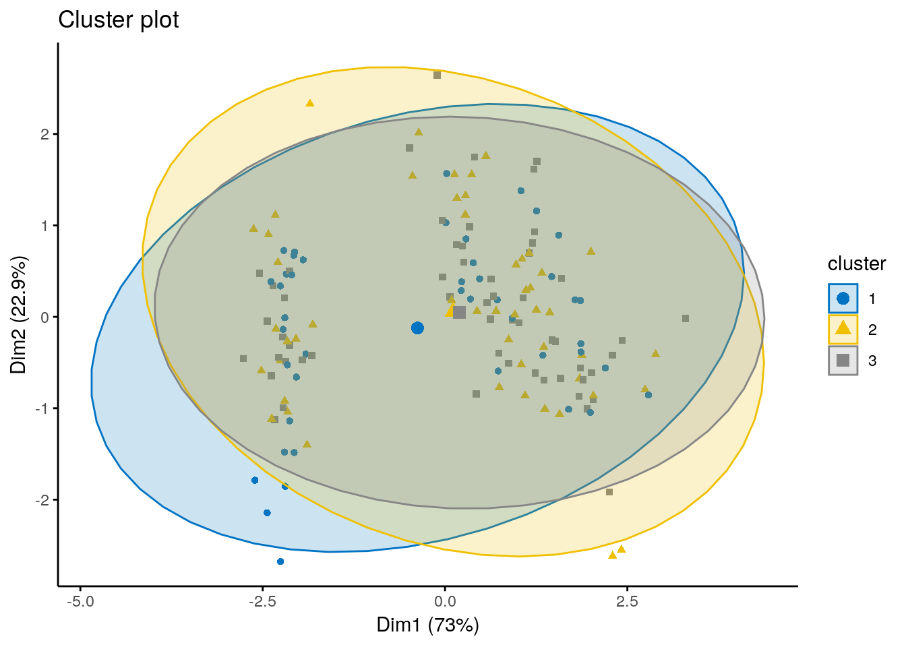
Hierarchial clustering on random data set
fviz_dend(hclust(dist(random_df)), k = 3, k_colors = "jco", as.ggplot = TRUE, show_labels = FALSE)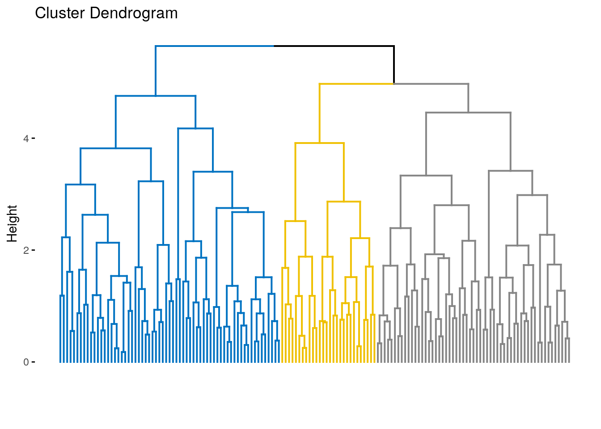
Methods for assessing clustering tendency
There are two methods recommended for evaluating the clustering tendency:
- Statistical method - Hopkins statistic
- Visual methods - Visual Assessment of cluster Tendency (VAT) algorithm
Statistical Methods
Hopkins statistical method.
- Null hypothesis: the data set D is uniformly distributed (i.e., no meaningful clusters)
- Alternative hypothesis: the dataset D is not uniformly distributed (i.e., contains meaningful clusters)
Rejecting the Null hypothesis occurs if the Hopkins statistic is close to zero.
Non-Random Data Set
library(clustertend)
set.seed(123)
hopkins(df,n = nrow(df)-1)## $H
## [1] 0.1815219Null Hypothesis is rejected. Clustering is possible.
Random Data Set
set.seed(123)
hopkins(random_df,n = nrow(random_df) - 1)## $H
## [1] 0.5145653Null Hypothesis is TRUE. Clustering is not possible
Visual methods
fviz_dist(dist(df), show_labels = FALSE) +
labs(title = "Iris data")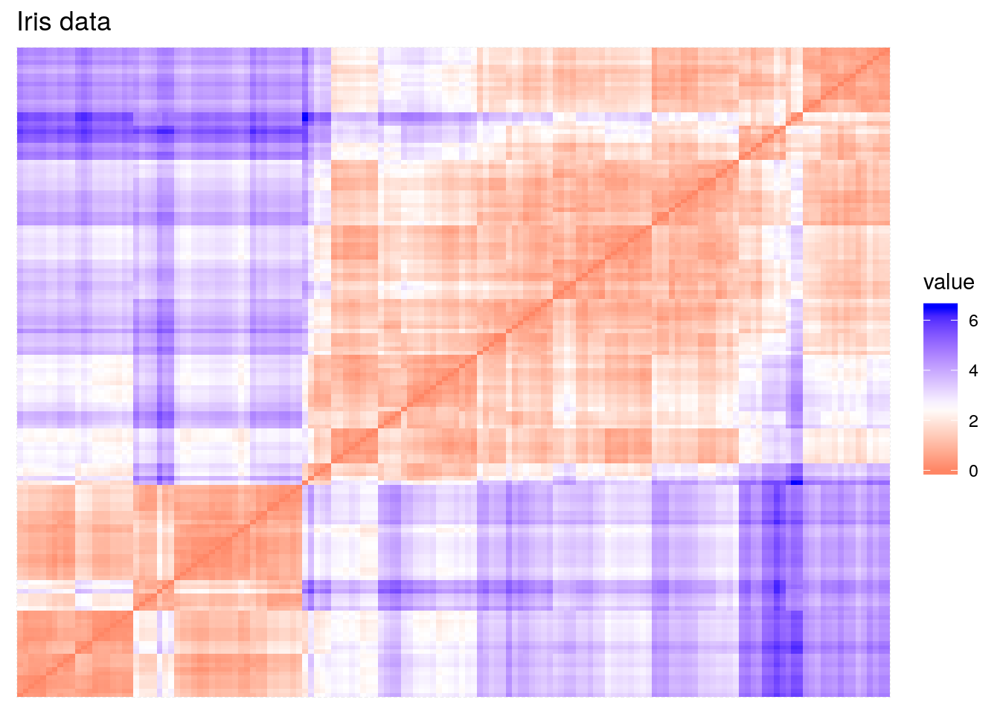
fviz_dist(dist(random_df), show_labels = FALSE) +
labs(title = "Random data")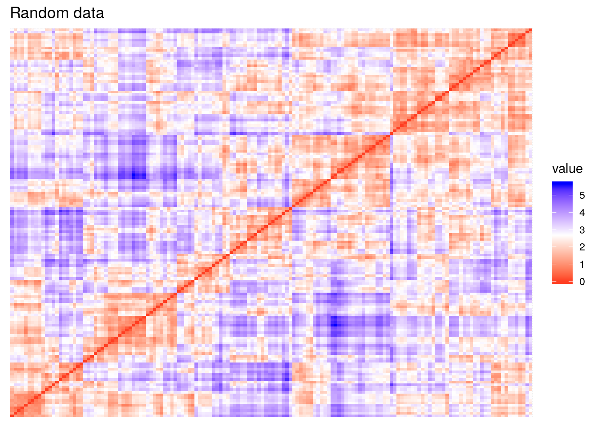
Determining the Optimal Number of Clusters
There is no specific method for determing the optimal number of clusters. There are about 30 algorithms that can be used to project the best number of clusters. The following 3 methods are fequently consumed:
- Elbow method
- Average silhoette method
- Gap statistic method
Computing the number of clusters using R
Two functions to use:
1) factoextra::fviz_nbclust()
2) NbClust::NbClust()
library(factoextra)
library(NbClust)Data preparation
df <- USArrests %>% mutate_all(.funs = funs(scale(.))) %>% as.vector
head(df)## Murder Assault UrbanPop Rape
## 1 1.24256408 0.7828393 -0.5209066 -0.003416473
## 2 0.50786248 1.1068225 -1.2117642 2.484202941
## 3 0.07163341 1.4788032 0.9989801 1.042878388
## 4 0.23234938 0.2308680 -1.0735927 -0.184916602
## 5 0.27826823 1.2628144 1.7589234 2.067820292
## 6 0.02571456 0.3988593 0.8608085 1.864967207Elbow Method (WSS)
fviz_nbclust(df,kmeans, method = "wss") +
geom_vline(xintercept = 4, linetype = 2)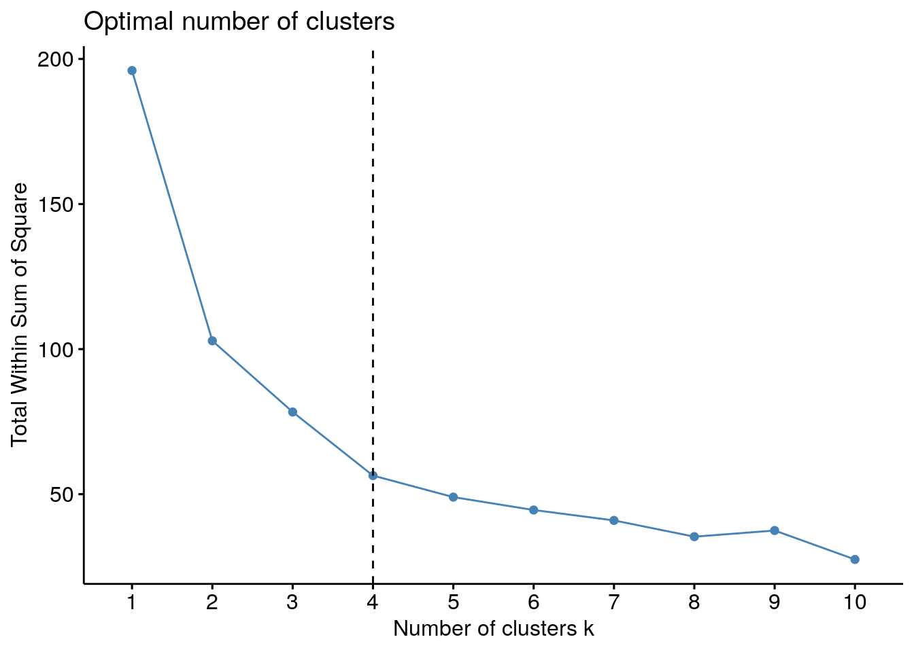
Silhouette Method
fviz_nbclust(df, kmeans, method = "silhouette") +
labs(subtitle = "Silhouette method")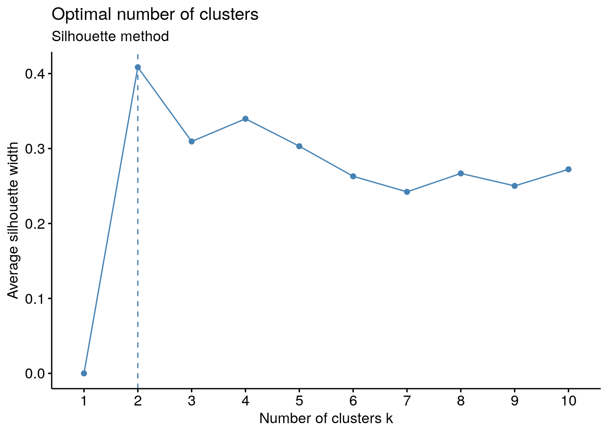
Gap Statitic Method
set.seed(123)
fviz_nbclust(df,kmeans, nstart = 25, method = "gap_stat", nboot =50) +
labs(subtitle = "Gap statitic method")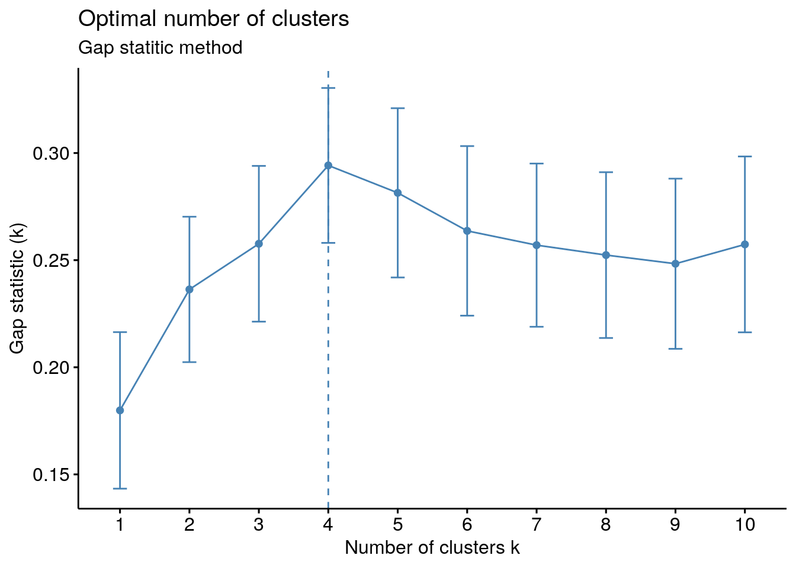